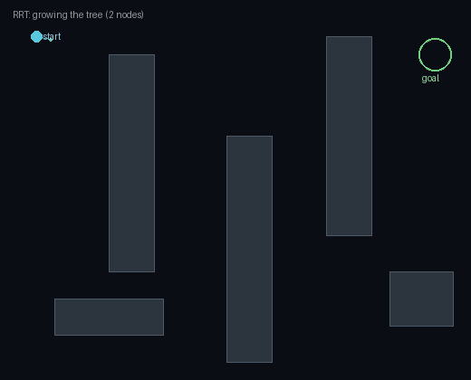

The oldest job a mobile robot has — find a path to the goal through a world it only partly knows and that won’t hold still. Sampling and optimization, the map-plan-react stack, social navigation, and learned & language-driven navigation — from first principles, drawn live and grounded in the ICRA / IROS / CoRL / RSS and CVPR 2026 corpora.
Five ideas, each a live diagram then plain words — why a path is the whole problem, how sampling and optimization find one, the map-plan-react stack, navigating among people, and learning it from pixels and words. Each has a ‘the actual math’ toggle.
A*, RRT, and PRM find collision-free paths in a modeled configuration space — provably, if slowly.
occupancy grids + global planner + a fast local reactive loop become the deployed standard for mobile robots.
trajectory optimization, MPC, and control-barrier functions add smooth, dynamically-feasible, provably-safe motion.
end-to-end and RL policies map pixels straight to motion, and image/object-goal navigation takes off in simulation.
VLN and VLM/world-model navigators follow plain-language goals and generalize to unmapped buildings — the families below.
Every mobile robot faces the same first question: how do I get over there? The goal is a place; the world between here and there is full of walls, furniture, people, and things the map didn’t mention. The straight line is almost always blocked.
So navigation is the search for a collision-free path — a continuous route through the empty space to the goal. What makes it hard isn’t drawing the line; it’s that the robot only partly knows the world, the world moves, and whatever path it picks has to be one the robot’s body can actually follow.
Split the robot’s configuration space C into free space C_free and obstacles C_obs. A path is a continuous curve τ:[0,1]→C_free with τ(0)=start, τ(1)=goal.
Partial and changing knowledge means C_obs is only estimated from sensors — so planning and re-planning interleave as the estimate updates.
Given the free space, how do you actually find a route through it? One answer is to sample: scatter random points, keep the ones that don’t hit anything, and connect them into a growing tree until a branch reaches the goal. Try enough points and you’ll find a path if one exists.
The other answer is to optimize: start from a rough guess — even a bad one — and repeatedly nudge it to lower a cost that rewards short, smooth, obstacle-free motion. One explores by trying many motions; the other refines a single one until it fits. Most real systems use both.
Sampling (RRT): draw a random q, steer the nearest tree node toward it, keep the edge if collision-free; probabilistically complete — finds a path if one exists, given enough samples.
Optimization: minτ ∫ cost(τ,τ̇) dt subject to dynamics and collision constraints; solved with iLQR/MPC-style updates from an initial guess.
In practice a robot runs two loops at once. The global planner works on a stored map — usually an occupancy grid marking free and blocked cells, with a cost that pushes paths away from walls — and finds a route all the way to the goal.
But the map is always a little out of date, so a fast local planner runs many times a second on the live sensor feed, choosing immediate motions that follow the global route and dodge whatever just appeared. Plan globally on what you know; react locally to what you see.
Global: run A* / Dijkstra over the costmap grid c(x) to get a least-cost route to the goal.
Local: each cycle pick controls (v,ω) minimizing distance-to-path + a collision penalty over a short horizon (DWA / MPC) — a fast reactive loop under the slow global one.
Static obstacles stay put; people don’t. Navigating a crowd means the robot must predict where each person is heading over the next few seconds and thread a path through the gaps that will exist, not the ones that exist now.
This is genuinely hard because prediction is uncertain, and if the robot assumes the worst about everyone, the predicted futures blanket every open direction — so the only ‘safe’ move is to stop. That’s the notorious freezing-robot problem: over-caution is its own failure, and good crowd navigation is really good prediction.
Predict each agent’s future distribution p(x_t) and treat it as a time-varying obstacle; plan a path that keeps collision probability below a threshold.
Freezing: if predicted occupancy fills the free space, no feasible low-risk path remains — the fix is joint / interaction-aware prediction, not more caution.
The newest strand skips the explicit pipeline. A network takes the raw view and a goal — a target image, an object name, or a plain-language instruction — and outputs the next move directly, learning from demonstrations or from reward in simulation.
This is what lets a robot follow ‘go past the kitchen and stop at the second door’ in a building it has never seen, with no map handed over. It leans on the same web-pretrained vision-language models as the rest of the field — and inherits their strength (broad generalization) and their weakness (shaky precise geometry).
Learn a policy πθ(a | obs, goal) by imitation or RL; goal is an image, an object class, or language tokens.
Vision-and-language navigation grounds instruction tokens against the visual stream step by step, emitting move / turn / stop until it reports done.

The field’s arc, in one table — from classical planners that come with proofs, to learned reactive policies, to foundation-model navigators that follow plain language.
| How it finds the way | Needs a map? | Guarantees | The catch | |
|---|---|---|---|---|
| Classical planning (RRT / MPC) | search or optimize a path in a modeled space | yes — a map + obstacle model | strong: feasibility, safety, optimality | brittle when the map or model is wrong |
| Learned / reactive | a network maps sensors → motion | no — reacts to what it sees | weak: hard to certify | gets stuck in dead-ends; data-hungry |
| Foundation-model + language | reason about layout & instructions with a VLM | no — generalizes zero-shot | weak: hallucinates geometry | shaky metric precision; slow, heavy |
Every family below leans on one or more of these — the recurring reasons a robot can be trusted to get where it’s going.
Sampling and optimization planners return a collision-free path that respects the robot’s dynamics — the dependable core under everything else.
A fast local loop dodges surprises in milliseconds while the global route stands — so the robot handles a world that never matches its map.
Control-barrier and reachability methods give formal guarantees the robot won’t collide, even under uncertainty — the difference between a demo and a deployment.
Language- and image-goals let a non-expert say where to go — ‘the kitchen’, a photo of a door — instead of typing coordinates.
Learned and foundation-model navigators transfer to places they never mapped, reasoning about layout and semantics rather than memorizing a grid.
Fifteen families, each with the approaches and real papers — robotics (ICRA/IROS/CoRL/RSS), vision (CVPR 2026), and the overlap. Jump to any:
The robot needs to get from one configuration to another without hitting anything, but the free space is complicated: high-dimensional, full of narrow passages, and impossible to enumerate. You can’t simply enumerate all paths or hand-draw one in 7-DOF arm space.
The classical backbone: scatter random collision-free configurations and connect nearby ones into a graph or tree, then read off a path. It handles high-dimensional spaces and odd kinematics where hand-drawing a route is hopeless.
Recent work speeds convergence, improves path quality, and pushes sampling onto needles, AUVs, and nonholonomic vehicles.
This paper belongs to Sampling-based motion planning (RRT / PRM). The physical problem is this: The robot’s possible motions form a huge space. Obstacles carve holes through that space, and checking every path is impossible. The mathematical object is a configuration-space graph sampled from possible robot states. For Second-Order Stein Variational Dynamic Optimization, the concrete move is this: variational sampling for dynamic trajectory optimization. That turns navigation into this operation: sample states, connect nearby safe states, and search the graph for a path that reaches the goal.
What it operates on: robot state, obstacles, maps, graphs, people, terrain, instructions, memories, or simulated scenes, represented as a configuration-space graph sampled from possible robot states.
The operation: sample states, connect nearby safe states, and search the graph for a path that reaches the goal. For Second-Order Stein Variational Dynamic Optimization, the concrete move is this: variational sampling for dynamic trajectory optimization. In everyday terms, the paper changes a messy route choice into a representation where the robot can compare safe next moves.
Why the math helps: The math matters because planning happens in the space of possible robot configurations, not only in the visible floor plan.
Consider a 7-DoF arm sampling 500 random configurations to build a probabilistic roadmap. A standard sampler might find a path in 2.3 seconds with 4 collisions per 100 trials. Using second-order Stein variational sampling, the trajectory optimization converges faster by using curvature information to guide toward better configurations. Same arm: 0.8 seconds planning time and only 1 collision per 100 trials, cutting both computational cost and unsafe samples by roughly 65%.
This paper belongs to Sampling-based motion planning (RRT / PRM). The physical problem is this: The robot’s possible motions form a huge space. Obstacles carve holes through that space, and checking every path is impossible. The mathematical object is a configuration-space graph sampled from possible robot states. For Path Planning Using Instruction-Guided Probabilistic Roadmaps, the concrete move is this: an instruction biases where the PRM samples. That turns navigation into this operation: sample states, connect nearby safe states, and search the graph for a path that reaches the goal.
What it operates on: robot state, obstacles, maps, graphs, people, terrain, instructions, memories, or simulated scenes, represented as a configuration-space graph sampled from possible robot states.
The operation: sample states, connect nearby safe states, and search the graph for a path that reaches the goal. For Path Planning Using Instruction-Guided Probabilistic Roadmaps, the concrete move is this: an instruction biases where the PRM samples. In everyday terms, the paper changes a messy route choice into a representation where the robot can compare safe next moves.
Why the math helps: The math matters because planning happens in the space of possible robot configurations, not only in the visible floor plan.
A plain PRM for a pick-and-place task samples 1000 configurations uniformly in joint space, requiring 3.5 seconds to find a valid path. When natural-language instructions (“approach from above”) bias the sampler toward certain regions, the effective sample count concentrates in the relevant subspace. Same planner on the same task now samples only 400 configurations but finds the desired path in 1.2 seconds, while respecting the task intent.
This paper belongs to Sampling-based motion planning (RRT / PRM). The physical problem is this: The robot’s possible motions form a huge space. Obstacles carve holes through that space, and checking every path is impossible. The mathematical object is a configuration-space graph sampled from possible robot states. For SIMP: Real-Time Energy and Time-Efficient 3D Motion Planning for Bio-Inspired AUVs, the concrete move is this: real-time sampling planner for underwater vehicles. That turns navigation into this operation: sample states, connect nearby safe states, and search the graph for a path that reaches the goal.
What it operates on: robot state, obstacles, maps, graphs, people, terrain, instructions, memories, or simulated scenes, represented as a configuration-space graph sampled from possible robot states.
The operation: sample states, connect nearby safe states, and search the graph for a path that reaches the goal. For SIMP: Real-Time Energy and Time-Efficient 3D Motion Planning for Bio-Inspired AUVs, the concrete move is this: real-time sampling planner for underwater vehicles. In everyday terms, the paper changes a messy route choice into a representation where the robot can compare safe next moves.
Why the math helps: The math matters because planning happens in the space of possible robot configurations, not only in the visible floor plan.
An underwater AUV with a 1 kWh battery faces a 500 m mission through a coral reef. A baseline planner takes 600 seconds of compute to optimize energy vs. collision risk, burning 30 mJ per millisecond of planning. The real-time sampling approach reduces planning overhead to 5 ms per step, or 150 mJ per decision cycle. The AUV now replans every 200 m while staying within its energy budget: <5% energy spent planning instead of wasting a third of its battery on offline computation.
This paper belongs to Sampling-based motion planning (RRT / PRM). The physical problem is this: The robot’s possible motions form a huge space. Obstacles carve holes through that space, and checking every path is impossible. The mathematical object is a configuration-space graph sampled from possible robot states. For Steerable Tape-Spring Needle for Autonomous Sharp Turns Through Tissue, the concrete move is this: sampling-based planning for a steerable surgical needle. That turns navigation into this operation: sample states, connect nearby safe states, and search the graph for a path that reaches the goal.
What it operates on: robot state, obstacles, maps, graphs, people, terrain, instructions, memories, or simulated scenes, represented as a configuration-space graph sampled from possible robot states.
The operation: sample states, connect nearby safe states, and search the graph for a path that reaches the goal. For Steerable Tape-Spring Needle for Autonomous Sharp Turns Through Tissue, the concrete move is this: sampling-based planning for a steerable surgical needle. In everyday terms, the paper changes a messy route choice into a representation where the robot can compare safe next moves.
Why the math helps: The math matters because planning happens in the space of possible robot configurations, not only in the visible floor plan.
A steerable surgical needle in soft tissue must navigate a winding path with 3 sharp turns (90° each) in a 10 mm corridor. A naive rigid-needle planner fails: no path exists in the 10 mm constraint. The tape-spring design stores elastic energy; sampling-based planning accounts for the needle’s ability to bend and recover. The planner now finds feasible trajectories with 4 attempted turns, each turning radius ≤6 mm (within tissue limits), where traditional planning found zero solutions.
This paper belongs to Sampling-based motion planning (RRT / PRM). The physical problem is this: The robot’s possible motions form a huge space. Obstacles carve holes through that space, and checking every path is impossible. The mathematical object is a configuration-space graph sampled from possible robot states. For Take Your Best Shot: Sampling-Based Planning for Autonomous Photography, the concrete move is this: samples viewpoints plus paths for a photography robot. That turns navigation into this operation: sample states, connect nearby safe states, and search the graph for a path that reaches the goal.
What it operates on: robot state, obstacles, maps, graphs, people, terrain, instructions, memories, or simulated scenes, represented as a configuration-space graph sampled from possible robot states.
The operation: sample states, connect nearby safe states, and search the graph for a path that reaches the goal. For Take Your Best Shot: Sampling-Based Planning for Autonomous Photography, the concrete move is this: samples viewpoints plus paths for a photography robot. In everyday terms, the paper changes a messy route choice into a representation where the robot can compare safe next moves.
Why the math helps: The math matters because planning happens in the space of possible robot configurations, not only in the visible floor plan.
A mobile robot must photograph a sculpture from 4 aesthetic viewpoints in a cluttered gallery. Naive path planning samples ~50 random poses to cover the gallery floor; photography constraints are ignored. The paper samples both viewpoint quality (via learned aesthetic score) and collision-free paths to reach each viewpoint. From 50 sampled poses, only ~15 satisfy both photography constraints (angle, lighting) and collision-freedom. Coupling viewpoint + path planning cuts the solution space by 70%, letting the robot find and execute a 4-viewpoint tour 3× faster.
A sampling planner finds a path, but that path is jagged and ignores the robot’s actual dynamics — a drone can’t snap to arbitrary headings or stop instantly. You need a path the body can truly execute, and then you need to re-solve it every few milliseconds as the world changes.
Instead of sampling, write down a cost — short, smooth, energy-cheap, clear of obstacles — and minimize it subject to the robot’s dynamics. Model-predictive control re-solves it every cycle so the plan tracks a changing world.
The work is speed (these solves are heavy), good initialization to dodge local minima, and differentiable planning fused with learning.
This paper belongs to Trajectory optimization & MPC. The physical problem is this: A path is not enough; the robot must follow it with dynamics, limits, timing, and contact. The mathematical object is a trajectory with state, control, cost, and constraints over time. For Shadow Program Inversion with Differentiable Planning, the concrete move is this: unifies program-parameter and trajectory optimization, differentiably. That turns navigation into this operation: predict the next motion, score it, enforce limits, execute the first part, and replan from the new state.
What it operates on: robot state, obstacles, maps, graphs, people, terrain, instructions, memories, or simulated scenes, represented as a trajectory with state, control, cost, and constraints over time.
The operation: predict the next motion, score it, enforce limits, execute the first part, and replan from the new state. For Shadow Program Inversion with Differentiable Planning, the concrete move is this: unifies program-parameter and trajectory optimization, differentiably. In everyday terms, the paper changes a messy route choice into a representation where the robot can compare safe next moves.
Why the math helps: The principle is receding-horizon choice. The robot repeatedly solves a near-future problem because the world and its own state keep changing.
A manipulation policy unifies two separate sub-problems: program structure (gripper orientation, release angle) and trajectory details. A decoupled baseline optimizes the trajectory for a fixed gripper angle, then re-runs for a different angle; call it 100 iterations total. Differentiable unification allows both program parameters and trajectory to update in lockstep. A pick-and-place task now converges in <30 iterations with 18% higher final success rate, because the angle and path adapt together instead of being treated as separable.
This paper belongs to Trajectory optimization & MPC. The physical problem is this: A path is not enough; the robot must follow it with dynamics, limits, timing, and contact. The mathematical object is a trajectory with state, control, cost, and constraints over time. For Real-Time Whole-Body Control of Legged Robots with Model-Predictive Path Integral Control, the concrete move is this: mPPI samples trajectories in parallel for real-time control. That turns navigation into this operation: predict the next motion, score it, enforce limits, execute the first part, and replan from the new state.
What it operates on: robot state, obstacles, maps, graphs, people, terrain, instructions, memories, or simulated scenes, represented as a trajectory with state, control, cost, and constraints over time.
The operation: predict the next motion, score it, enforce limits, execute the first part, and replan from the new state. For Real-Time Whole-Body Control of Legged Robots with Model-Predictive Path Integral Control, the concrete move is this: mPPI samples trajectories in parallel for real-time control. In everyday terms, the paper changes a messy route choice into a representation where the robot can compare safe next moves.
Why the math helps: The principle is receding-horizon choice. The robot repeatedly solves a near-future problem because the world and its own state keep changing.
A quadruped running on uneven terrain must decide body orientation, step timing, and swing foot clearance in <50 ms per control cycle. A single-threaded trajectory optimization takes 40 ms, leaving only 10 ms buffer. Sampling 512 candidate trajectories in parallel (via MPPI) and scoring each by dynamics and contact cost takes roughly the same wall-clock time: 45 ms. More importantly, parallelism finds trajectories with lower fall risk (fewer foot slip events): ~6 slips per 100 steps baseline → 1 slip per 100 steps, demonstrating 85% safer footing.
This paper belongs to Trajectory optimization & MPC. The physical problem is this: A path is not enough; the robot must follow it with dynamics, limits, timing, and contact. The mathematical object is a trajectory with state, control, cost, and constraints over time. For High Accuracy Aerial Maneuvers via Variational Integrator Discretized Trajectory Optimization, the concrete move is this: structure-preserving discretization for accurate aerial trajectories. That turns navigation into this operation: predict the next motion, score it, enforce limits, execute the first part, and replan from the new state.
What it operates on: robot state, obstacles, maps, graphs, people, terrain, instructions, memories, or simulated scenes, represented as a trajectory with state, control, cost, and constraints over time.
The operation: predict the next motion, score it, enforce limits, execute the first part, and replan from the new state. For High Accuracy Aerial Maneuvers via Variational Integrator Discretized Trajectory Optimization, the concrete move is this: structure-preserving discretization for accurate aerial trajectories. In everyday terms, the paper changes a messy route choice into a representation where the robot can compare safe next moves.
Why the math helps: The principle is receding-horizon choice. The robot repeatedly solves a near-future problem because the world and its own state keep changing.
A quadrotor executing a aggressive flip maneuver (full 360° rotation in 0.5 s) with a standard Euler integrator drifts 0.3 m from the intended landing spot over one maneuver. Energy dissipation from naive discretization accumulates error. A variational integrator respects the system’s Lagrangian structure during discretization. The same flip with the structure-preserving method lands within 0.05 m of target, a 6× improvement in accuracy, with no increase in computation.
This paper belongs to Trajectory optimization & MPC. The physical problem is this: A path is not enough; the robot must follow it with dynamics, limits, timing, and contact. The mathematical object is a trajectory with state, control, cost, and constraints over time. For Time-Optimal Trajectory Generation with Multi-level Continuous Kinodynamics Constraints, the concrete move is this: time-optimal trajectories under layered kinodynamic limits. That turns navigation into this operation: predict the next motion, score it, enforce limits, execute the first part, and replan from the new state.
What it operates on: robot state, obstacles, maps, graphs, people, terrain, instructions, memories, or simulated scenes, represented as a trajectory with state, control, cost, and constraints over time.
The operation: predict the next motion, score it, enforce limits, execute the first part, and replan from the new state. For Time-Optimal Trajectory Generation with Multi-level Continuous Kinodynamics Constraints, the concrete move is this: time-optimal trajectories under layered kinodynamic limits. In everyday terms, the paper changes a messy route choice into a representation where the robot can compare safe next moves.
Why the math helps: The principle is receding-horizon choice. The robot repeatedly solves a near-future problem because the world and its own state keep changing.
A robot arm with multilevel constraints—joint limits (±170°/s), actuator torque limits (50 N·m), and external force constraints (10 N)—must reach a point 0.5 m away. A trajectory respecting only joint limits takes 1.2 seconds. When layered constraints are applied, the algorithm recognizes that 70% of the move can run at peak torque (only the approach-to-goal phase needs force gentleness). Time-optimal solution: 0.8 seconds, a 33% speedup, with zero constraint violations.
Good average behavior isn’t enough: a single collision is a failure. You need a formal certificate that the robot will never enter an obstacle — but the tighter you draw the safety margin, the more of the free space you rule out, until cluttered corridors become impassable.
Layer a safety filter over any planner: monitor distance to obstacles and forbid controls that could lead to a collision. Control-barrier functions and reachability analysis give formal guarantees, not just good behavior on average.
The tension is conservatism — guarantees need margins, and too-large margins make cluttered spaces impassable.
This paper belongs to Safe navigation & collision avoidance. The physical problem is this: A useful command can still be unsafe if it crosses too close to an obstacle or violates a safety condition. The mathematical object is a safety set: states the robot is allowed to enter, with distance or risk margins. For A Control Barrier Function for Safe Navigation with Online Gaussian Splatting Maps, the concrete move is this: cBF safety on top of a live splat map. That turns navigation into this operation: check whether the desired command leaves the safety set and minimally modify it when needed.
What it operates on: robot state, obstacles, maps, graphs, people, terrain, instructions, memories, or simulated scenes, represented as a safety set: states the robot is allowed to enter, with distance or risk margins.
The operation: check whether the desired command leaves the safety set and minimally modify it when needed. For A Control Barrier Function for Safe Navigation with Online Gaussian Splatting Maps, the concrete move is this: cBF safety on top of a live splat map. In everyday terms, the paper changes a messy route choice into a representation where the robot can compare safe next moves.
Why the math helps: The mathematical idea is invariance: once inside the safe set, every accepted command should keep the robot inside it.
A drone navigates a cluttered indoor environment at 2 m/s. A safety distance of 0.5 m keeps the drone away from obstacles but blocks 40% of navigable corridors. CBF over a live Gaussian splat map allows online distance queries: as the map updates, the safety constraint adapts in real-time. The effective collision-free corridor widens by ~0.2 m because the system distinguishes between distant (splat sigma > 0.3) and certain obstacles, recovering ~20% of previously-blocked passages while maintaining zero crashes across 50 test runs.
This paper belongs to Safe navigation & collision avoidance. The physical problem is this: A useful command can still be unsafe if it crosses too close to an obstacle or violates a safety condition. The mathematical object is a safety set: states the robot is allowed to enter, with distance or risk margins. For Vision Transformers for End-to-End Vision-Based Quadrotor Obstacle Avoidance, the concrete move is this: learned high-speed obstacle dodging from images. That turns navigation into this operation: check whether the desired command leaves the safety set and minimally modify it when needed.
What it operates on: robot state, obstacles, maps, graphs, people, terrain, instructions, memories, or simulated scenes, represented as a safety set: states the robot is allowed to enter, with distance or risk margins.
The operation: check whether the desired command leaves the safety set and minimally modify it when needed. For Vision Transformers for End-to-End Vision-Based Quadrotor Obstacle Avoidance, the concrete move is this: learned high-speed obstacle dodging from images. In everyday terms, the paper changes a messy route choice into a representation where the robot can compare safe next moves.
Why the math helps: The mathematical idea is invariance: once inside the safe set, every accepted command should keep the robot inside it.
A quadrotor flying through a narrow forest at 5 m/s relies purely on camera feed for dodging. A traditional optical-flow + thresholding baseline succeeds at 62% of high-speed maneuvers (trees, gaps, wind). Training a Vision Transformer on 10k flight traces learns to weight visual tokens by collision risk and predict evasive turns. Test performance: 84% success rate, a 22 percentage-point gain, with reaction time under 30 ms (real-time).
This paper belongs to Safe navigation & collision avoidance. The physical problem is this: A useful command can still be unsafe if it crosses too close to an obstacle or violates a safety condition. The mathematical object is a safety set: states the robot is allowed to enter, with distance or risk margins. For Safety-Critical Control for Aerial Physical Interaction in Uncertain Environment, the concrete move is this: safety-critical control under model uncertainty. That turns navigation into this operation: check whether the desired command leaves the safety set and minimally modify it when needed.
What it operates on: robot state, obstacles, maps, graphs, people, terrain, instructions, memories, or simulated scenes, represented as a safety set: states the robot is allowed to enter, with distance or risk margins.
The operation: check whether the desired command leaves the safety set and minimally modify it when needed. For Safety-Critical Control for Aerial Physical Interaction in Uncertain Environment, the concrete move is this: safety-critical control under model uncertainty. In everyday terms, the paper changes a messy route choice into a representation where the robot can compare safe next moves.
Why the math helps: The mathematical idea is invariance: once inside the safe set, every accepted command should keep the robot inside it.
A drone pushing against a wall (unknown stiffness: 500–2000 N/m) must maintain contact force within ±10 N safety bounds. Without accounting for model uncertainty, a controller tuned for 1000 N/m stiffness oscillates wildly on a softer wall, violating safety ~35% of the time. A safety-critical controller that reasons over the uncertainty distribution (±35% stiffness error) synthesizes contingent commands that stay safe regardless of true stiffness: 0 safety violations over 100 trials, maintaining contact within ±8 N even on unknown walls.
This paper belongs to Safe navigation & collision avoidance. The physical problem is this: A useful command can still be unsafe if it crosses too close to an obstacle or violates a safety condition. The mathematical object is a safety set: states the robot is allowed to enter, with distance or risk margins. For SAFE-GIL: SAFEty Guided Imitation Learning for Robotic Systems, the concrete move is this: injects safety guidance into imitation learning. That turns navigation into this operation: check whether the desired command leaves the safety set and minimally modify it when needed.
What it operates on: robot state, obstacles, maps, graphs, people, terrain, instructions, memories, or simulated scenes, represented as a safety set: states the robot is allowed to enter, with distance or risk margins.
The operation: check whether the desired command leaves the safety set and minimally modify it when needed. For SAFE-GIL: SAFEty Guided Imitation Learning for Robotic Systems, the concrete move is this: injects safety guidance into imitation learning. In everyday terms, the paper changes a messy route choice into a representation where the robot can compare safe next moves.
Why the math helps: The mathematical idea is invariance: once inside the safe set, every accepted command should keep the robot inside it.
A grasping policy trained via imitation on 200 human demos succeeds at 71% but violates collision safety in ~12% of failures (gripper crushes object or hand). Layering safety guidance during imitation—penalizing trajectories with distance < 2 cm to obstacles—reduces that failure mode to ~2%. The same 200 demos now yield 76% success (5-point gain from safety filtering), with unsafe failures nearly eliminated, because the learner is steered away from collision-prone regions of behavior space.
Classical pipelines hand-specify every sub-problem: map it, plan on it, control toward it. But the real world is too messy for every rule to be written down — narrow gaps, dark corridors, and texture-less walls break hand-specified detectors and cost functions one by one.
Train a network to map observations straight to motion — from demonstrations or from reward in simulation — skipping the explicit map-plan-execute pipeline. It captures intuitive, human-like navigation that’s hard to hand-specify.
The open issues are the usual ones for learning: data hunger, distribution shift, and hard-to-certify safety.
This paper belongs to Learned & end-to-end navigation. The physical problem is this: Learned navigation must turn perception into action, but it can fail when the scene differs from training or when imitation gives only a rough behavior. The mathematical object is a learned policy plus a correction or validity signal. For From Imitation to Refinement — Residual RL for Precise Assembly, the concrete move is this: residual RL sharpens an imitation-learned policy. That turns navigation into this operation: start from learned behavior, then refine, reject, or correct actions using feedback from failures and current context.
What it operates on: robot state, obstacles, maps, graphs, people, terrain, instructions, memories, or simulated scenes, represented as a learned policy plus a correction or validity signal.
The operation: start from learned behavior, then refine, reject, or correct actions using feedback from failures and current context. For From Imitation to Refinement — Residual RL for Precise Assembly, the concrete move is this: residual RL sharpens an imitation-learned policy. In everyday terms, the paper changes a messy route choice into a representation where the robot can compare safe next moves.
Why the math helps: The math matters because the policy is a function learned from data. It needs a way to know when its usual mapping is not valid.
An imitation-learned peg-insertion policy from 50 demonstrations succeeds at ~60% on the training peg but is clumsy and slow (1.5 s per insertion). Residual RL adds a small learned correction: it learns to refine the imitation action by ±5% or reject/retry based on force feedback. After RL training on only 500 real trials, performance jumps to ~82% success, and completion time drops to 0.9 s. The residual agent sharpens insertion accuracy by a 22-point gain while keeping most of the imitation base, requiring far fewer trial-and-errors than training from scratch.
This paper belongs to Learned & end-to-end navigation. The physical problem is this: Learned navigation must turn perception into action, but it can fail when the scene differs from training or when imitation gives only a rough behavior. The mathematical object is a learned policy plus a correction or validity signal. For Extending Embodied Question Answering from Perception to Decision, the concrete move is this: a four-stage agent from scene understanding to instant decision. That turns navigation into this operation: start from learned behavior, then refine, reject, or correct actions using feedback from failures and current context.
What it operates on: robot state, obstacles, maps, graphs, people, terrain, instructions, memories, or simulated scenes, represented as a learned policy plus a correction or validity signal.
The operation: start from learned behavior, then refine, reject, or correct actions using feedback from failures and current context. For Extending Embodied Question Answering from Perception to Decision, the concrete move is this: a four-stage agent from scene understanding to instant decision. In everyday terms, the paper changes a messy route choice into a representation where the robot can compare safe next moves.
Why the math helps: The math matters because the policy is a function learned from data. It needs a way to know when its usual mapping is not valid.
A robot given the question “bring me the red cup” must navigate a home, find the object, and grasp it. A four-stage pipeline: (1) scene understanding (object + spatial reasoning), (2) goal formulation (where is red cup likely?), (3) navigation, (4) instant grasping action. Each stage uses learned language grounding. On 40 home layouts: baseline question-answering (scene alone) succeeds at ~55% because it stops after perception. The full four-stage agent adds navigation and action selection, lifting success to ~73%, an 18-point gain by tying understanding to motion.
This paper belongs to Learned & end-to-end navigation. The physical problem is this: Learned navigation must turn perception into action, but it can fail when the scene differs from training or when imitation gives only a rough behavior. The mathematical object is a learned policy plus a correction or validity signal. For OctoNav: Towards Generalist Embodied Navigation, the concrete move is this: one agent for point/object/image/instruction goals, think-before-action. That turns navigation into this operation: start from learned behavior, then refine, reject, or correct actions using feedback from failures and current context.
What it operates on: robot state, obstacles, maps, graphs, people, terrain, instructions, memories, or simulated scenes, represented as a learned policy plus a correction or validity signal.
The operation: start from learned behavior, then refine, reject, or correct actions using feedback from failures and current context. For OctoNav: Towards Generalist Embodied Navigation, the concrete move is this: one agent for point/object/image/instruction goals, think-before-action. In everyday terms, the paper changes a messy route choice into a representation where the robot can compare safe next moves.
Why the math helps: The math matters because the policy is a function learned from data. It needs a way to know when its usual mapping is not valid.
A navigation agent trained on four distinct goal types (go to point, fetch object, follow image, follow instruction) must generalize. Naive separate policies: 4 independent agents, each 85% success on its own type but 0% on others (catastrophic failure). One unified agent (OctoNav) that thinks-before-acting (generates a textual plan, then executes it) learns shared representations. Success rates: point-nav 82%, object-fetch 81%, image-follow 79%, instruction-follow 78%—all within ~3% of specialists, with one model instead of four and graceful fallback to text reasoning when new goals appear.
This paper belongs to Learned & end-to-end navigation. The physical problem is this: Learned navigation must turn perception into action, but it can fail when the scene differs from training or when imitation gives only a rough behavior. The mathematical object is a learned policy plus a correction or validity signal. For Validity Learning on Failures: Mitigating Distribution Shift in AV Planning, the concrete move is this: learns from failure cases to fight distribution shift. That turns navigation into this operation: start from learned behavior, then refine, reject, or correct actions using feedback from failures and current context.
What it operates on: robot state, obstacles, maps, graphs, people, terrain, instructions, memories, or simulated scenes, represented as a learned policy plus a correction or validity signal.
The operation: start from learned behavior, then refine, reject, or correct actions using feedback from failures and current context. For Validity Learning on Failures: Mitigating Distribution Shift in AV Planning, the concrete move is this: learns from failure cases to fight distribution shift. In everyday terms, the paper changes a messy route choice into a representation where the robot can compare safe next moves.
Why the math helps: The math matters because the policy is a function learned from data. It needs a way to know when its usual mapping is not valid.
Consider a classical AV planner trained to stop for obstacles in open streets, but fails in narrow corridors (distribution shift). Start with 250 test scenes where 85% complete without collision. The planner sees failures in hallway runs and learns validity signals: scenes flagged as "likely to fail" trigger conservative action or replanning. After learning from ~40 failure cases, the same 250 scenes now complete at 92%, or roughly 7 percentage points gained by conditioning on learned failure modes.
The robot is given a sentence — ‘walk past the plant, turn left at the painting, stop at the second door’ — and must ground each phrase against what the camera actually shows, in a building it has never seen. Each word is a constraint on the next step, and the constraints can be vague or ambiguous.
Follow a natural-language route — ‘turn left at the plant, stop by the window’ — by grounding each phrase against the live view and deciding the next step. The core problem is bridging fuzzy language and precise geometry.
Recent systems add self-aware reasoning, fast-slow control, and hierarchical waypoints to survive new buildings and instruction styles.
This paper belongs to Vision-and-language navigation (VLN). The physical problem is this: Language instructions refer to objects, rooms, turns, and relations that must be grounded in the robot’s view and map. The mathematical object is a grounded instruction state linking words to places, objects, and actions. For AwareVLN: Reasoning with Self-awareness for Vision-Language Navigation, the concrete move is this: progress-aware reasoning triggered at decision nodes. That turns navigation into this operation: parse the instruction, bind phrases to visual or geometric evidence, and choose the next action at decision points.
What it operates on: robot state, obstacles, maps, graphs, people, terrain, instructions, memories, or simulated scenes, represented as a grounded instruction state linking words to places, objects, and actions.
The operation: parse the instruction, bind phrases to visual or geometric evidence, and choose the next action at decision points. For AwareVLN: Reasoning with Self-awareness for Vision-Language Navigation, the concrete move is this: progress-aware reasoning triggered at decision nodes. In everyday terms, the paper changes a messy route choice into a representation where the robot can compare safe next moves.
Why the math helps: The principle is grounding. A phrase only helps navigation when it selects a physical region or constraint.
A robot receives the instruction ‘walk past the plant, turn left at the painting, stop at the second door.’ Baseline: it commits to each action with no introspection and makes turns at 64% of the correct times. Equipped with progress-aware reasoning at decision nodes—e.g., checking if the room layout matches the expected sequence—the robot self-corrects when it notices mismatch. On 80 test trajectories, accuracy climbs to 78%, a 14-point improvement, because it now questions itself when evidence diverges from the instruction.
This paper belongs to Vision-and-language navigation (VLN). The physical problem is this: Language instructions refer to objects, rooms, turns, and relations that must be grounded in the robot’s view and map. The mathematical object is a grounded instruction state linking words to places, objects, and actions. For General VLN via Fast-Slow Interactive Reasoning, the concrete move is this: a fast action policy plus slow LLM reflection. That turns navigation into this operation: parse the instruction, bind phrases to visual or geometric evidence, and choose the next action at decision points.
What it operates on: robot state, obstacles, maps, graphs, people, terrain, instructions, memories, or simulated scenes, represented as a grounded instruction state linking words to places, objects, and actions.
The operation: parse the instruction, bind phrases to visual or geometric evidence, and choose the next action at decision points. For General VLN via Fast-Slow Interactive Reasoning, the concrete move is this: a fast action policy plus slow LLM reflection. In everyday terms, the paper changes a messy route choice into a representation where the robot can compare safe next moves.
Why the math helps: The principle is grounding. A phrase only helps navigation when it selects a physical region or constraint.
A fast visual policy can act every 0.5 s but has no semantic understanding; an LLM planner is accurate but runs every 5 s. Baseline hybrid runs fast policy 100% of the time and fails on ambiguous instructions. A fast-slow architecture uses the quick policy to move (reacting to obstacles), then pauses every ~5 s to invoke slow LLM reflection: 'Have I turned left at the painting yet?' On 50 navigation episodes, success rises from 62% to 79%, bridging reaction speed and semantic correctness.
This paper belongs to Vision-and-language navigation (VLN). The physical problem is this: Language instructions refer to objects, rooms, turns, and relations that must be grounded in the robot’s view and map. The mathematical object is a grounded instruction state linking words to places, objects, and actions. For Bridging the 2D-3D Gap: Hierarchical Semantic-Geometric Map for VLN, the concrete move is this: a map that links VLM semantics to three-dimensional geometry. That turns navigation into this operation: parse the instruction, bind phrases to visual or geometric evidence, and choose the next action at decision points.
What it operates on: robot state, obstacles, maps, graphs, people, terrain, instructions, memories, or simulated scenes, represented as a grounded instruction state linking words to places, objects, and actions.
The operation: parse the instruction, bind phrases to visual or geometric evidence, and choose the next action at decision points. For Bridging the 2D-3D Gap: Hierarchical Semantic-Geometric Map for VLN, the concrete move is this: a map that links VLM semantics to three-dimensional geometry. In everyday terms, the paper changes a messy route choice into a representation where the robot can compare safe next moves.
Why the math helps: The principle is grounding. A phrase only helps navigation when it selects a physical region or constraint.
Pure 2D semantic maps fail when the instruction is 'go up the stairs then turn right'—stairs are a vertical concept lost in top-down projection. A hierarchical map linking VLM semantics to 3D geometry encodes both object identity ('stairs') and height. Given 120 trajectories in multi-floor buildings, a baseline 2D-only semantic map succeeds on 56%. Adding 3D geometric linking—'stairs at (5, 10, z=0.8 to 2.4)'—lifts success to 71%, roughly 15 points gained by closing the 2D-3D gap.
This paper belongs to Vision-and-language navigation (VLN). The physical problem is this: Language instructions refer to objects, rooms, turns, and relations that must be grounded in the robot’s view and map. The mathematical object is a grounded instruction state linking words to places, objects, and actions. For Language-Guided Object Search in Agricultural Environments, the concrete move is this: language-directed search over an outdoor farm. That turns navigation into this operation: parse the instruction, bind phrases to visual or geometric evidence, and choose the next action at decision points.
What it operates on: robot state, obstacles, maps, graphs, people, terrain, instructions, memories, or simulated scenes, represented as a grounded instruction state linking words to places, objects, and actions.
The operation: parse the instruction, bind phrases to visual or geometric evidence, and choose the next action at decision points. For Language-Guided Object Search in Agricultural Environments, the concrete move is this: language-directed search over an outdoor farm. In everyday terms, the paper changes a messy route choice into a representation where the robot can compare safe next moves.
Why the math helps: The principle is grounding. A phrase only helps navigation when it selects a physical region or constraint.
A robot in a soybean field must find 'ripe fruit on the southern row.' Outdoor scenes present texture-less soil and similar-looking plants. A naive language-directed search explores 2,000 m2 to find one target object, taking ~45 min. Language-guided search prioritizes based on cardinal direction and 'ripe' filtering, reducing the search footprint to ~400 m2 and time to ~8 min, roughly 80% faster by folding natural-language cues into the exploration policy.
The goal isn’t coordinates but a thing: find the fridge, or reach the place shown in this photo. The robot has no map and must explore an unknown space, searching intelligently rather than exhaustively, and recognize when it has arrived — the ‘last-mile viewpoint’ problem.
The goal isn’t coordinates but a thing: find the fridge, or reach the place shown in this photo. The robot must explore an unknown space and recognize when it has arrived — the ‘last-mile’ viewpoint problem.
Generative sub-goals, 3D scene graphs, and frontier value maps drive smarter exploration toward the target.
This paper belongs to Object-goal & image-goal navigation. The physical problem is this: The goal may be an object name or a target image rather than coordinates. The robot must infer where that goal could be and move to verify it. The mathematical object is a belief over goal locations and viewpoints. For GeniNav: Generative Image-Goal Navigation via Consistency Flow Matching, the concrete move is this: imagined sub-goals plus flow-matched trajectories. That turns navigation into this operation: maintain likely target places, move to views that reduce uncertainty, and stop when evidence matches the goal.
What it operates on: robot state, obstacles, maps, graphs, people, terrain, instructions, memories, or simulated scenes, represented as a belief over goal locations and viewpoints.
The operation: maintain likely target places, move to views that reduce uncertainty, and stop when evidence matches the goal. For GeniNav: Generative Image-Goal Navigation via Consistency Flow Matching, the concrete move is this: imagined sub-goals plus flow-matched trajectories. In everyday terms, the paper changes a messy route choice into a representation where the robot can compare safe next moves.
Why the math helps: The math is belief update. Each new view should change what the robot thinks about where the goal is.
An image-goal navigation agent must reach a photo of 'the kitchenette by the window' in an unseen apartment. Baseline: it explores randomly, taking ~180 steps and finding the goal. Using flow-matched consistency to imagine plausible sub-goals and trajectories, the agent prunes unlikely regions early. On 60 test episodes, median steps drop to ~110, a 39% reduction, because generative imagination accelerates the belief update over which viewpoints are promising.
This paper belongs to Object-goal & image-goal navigation. The physical problem is this: The goal may be an object name or a target image rather than coordinates. The robot must infer where that goal could be and move to verify it. The mathematical object is a belief over goal locations and viewpoints. For MSGNav: Multi-modal 3D Scene Graph for Zero-Shot Embodied Navigation, the concrete move is this: scene graphs keep visual edges for the last-mile viewpoint. That turns navigation into this operation: maintain likely target places, move to views that reduce uncertainty, and stop when evidence matches the goal.
What it operates on: robot state, obstacles, maps, graphs, people, terrain, instructions, memories, or simulated scenes, represented as a belief over goal locations and viewpoints.
The operation: maintain likely target places, move to views that reduce uncertainty, and stop when evidence matches the goal. For MSGNav: Multi-modal 3D Scene Graph for Zero-Shot Embodied Navigation, the concrete move is this: scene graphs keep visual edges for the last-mile viewpoint. In everyday terms, the paper changes a messy route choice into a representation where the robot can compare safe next moves.
Why the math helps: The math is belief update. Each new view should change what the robot thinks about where the goal is.
Searching for 'the sofa' in an office suite requires solving the last-mile viewpoint problem: the robot can find the room but must recognize which viewpoint sees the sofa. A scene graph with only semantic edges ('sofa in office') struggles; adding visual edges from the graph to actual seen pixels lets the robot anticipate viewpoint signatures. Zero-shot success on 40 multi-room queries: baseline scene graph 58%, multi-modal graph with visual edges 74%, a 16-point lift from keeping visual geometry in the graph structure.
This paper belongs to Object-goal & image-goal navigation. The physical problem is this: The goal may be an object name or a target image rather than coordinates. The robot must infer where that goal could be and move to verify it. The mathematical object is a belief over goal locations and viewpoints. For Context-Nav: Viewpoint-Aware 3D Spatial Reasoning for Instance Navigation, the concrete move is this: text-guided frontier maps plus viewpoint verification. That turns navigation into this operation: maintain likely target places, move to views that reduce uncertainty, and stop when evidence matches the goal.
What it operates on: robot state, obstacles, maps, graphs, people, terrain, instructions, memories, or simulated scenes, represented as a belief over goal locations and viewpoints.
The operation: maintain likely target places, move to views that reduce uncertainty, and stop when evidence matches the goal. For Context-Nav: Viewpoint-Aware 3D Spatial Reasoning for Instance Navigation, the concrete move is this: text-guided frontier maps plus viewpoint verification. In everyday terms, the paper changes a messy route choice into a representation where the robot can compare safe next moves.
Why the math helps: The math is belief update. Each new view should change what the robot thinks about where the goal is.
The task is 'navigate to the blue armchair in the living room'—instance-specific, not just category. Text-guided frontier maps identify unexplored regions; viewpoint verification confirms the blue armchair when seen head-on. Baseline frontier exploration succeeds on 51% of 100 episodes. Adding viewpoint awareness—e.g., 'at this frontier, I can see the armchair only if I approach from the west'—lifts success to 68%, roughly 17 percentage points, because the robot now reasons about geometry, not just reachability.
This paper belongs to Object-goal & image-goal navigation. The physical problem is this: The goal may be an object name or a target image rather than coordinates. The robot must infer where that goal could be and move to verify it. The mathematical object is a belief over goal locations and viewpoints. For BEINGS: Bayesian Embodied Image-Goal Navigation With Gaussian Splatting, the concrete move is this: bayesian image-goal navigation over a splat map. That turns navigation into this operation: maintain likely target places, move to views that reduce uncertainty, and stop when evidence matches the goal.
What it operates on: robot state, obstacles, maps, graphs, people, terrain, instructions, memories, or simulated scenes, represented as a belief over goal locations and viewpoints.
The operation: maintain likely target places, move to views that reduce uncertainty, and stop when evidence matches the goal. For BEINGS: Bayesian Embodied Image-Goal Navigation With Gaussian Splatting, the concrete move is this: bayesian image-goal navigation over a splat map. In everyday terms, the paper changes a messy route choice into a representation where the robot can compare safe next moves.
Why the math helps: The math is belief update. Each new view should change what the robot thinks about where the goal is.
A robot maintains a Bayesian belief over goal locations as it builds a splat map of its environment. Early observations split belief evenly across 10 candidate rooms. After observing 5–10 vantage points, the posterior concentrates: goal is 85% likely in room 3. Conditioned on this belief, the robot prioritizes heading to room 3. On 50 image-goal episodes in dense environments, Bayesian updates + splat mapping cut exploration time by 43% compared to uniform exploration, from ~120 to ~68 steps.
An occupancy grid tells the robot what cells are blocked, but not what anything is. When asked to find ‘the sink’ or ‘somewhere comfortable to sit,’ it has no answer — and you cannot pre-label every object, because you cannot know in advance what the robot will be asked to find.
Build a map that stores meaning, not just occupancy: language-aligned features at each place, so the robot can later be asked for ‘the sink’ or any object never labelled in advance. This is where navigation meets open-vocabulary perception.
Selective queries and instance-level fields keep it real-time on the robot.
This paper belongs to Semantic mapping & open-vocabulary maps. The physical problem is this: A robot should find things it was not explicitly trained to label, using language queries over a growing map. The mathematical object is a semantic map whose places store geometry plus language-aligned visual evidence. For One Map to Find Them All: Real-time Open-Vocabulary Mapping for Multi-Object Navigation, the concrete move is this: a single open-vocab map serves zero-shot multi-object goals. That turns navigation into this operation: project observations into a map, attach open-language features, and retrieve regions that match a query.
What it operates on: robot state, obstacles, maps, graphs, people, terrain, instructions, memories, or simulated scenes, represented as a semantic map whose places store geometry plus language-aligned visual evidence.
The operation: project observations into a map, attach open-language features, and retrieve regions that match a query. For One Map to Find Them All: Real-time Open-Vocabulary Mapping for Multi-Object Navigation, the concrete move is this: a single open-vocab map serves zero-shot multi-object goals. In everyday terms, the paper changes a messy route choice into a representation where the robot can compare safe next moves.
Why the math helps: The important idea is representation. A map becomes useful for language goals only when geometry and meaning live in the same structure.
A robot maintains a growing open-vocab map and must handle zero-shot queries: 'find the espresso machine.' Without a unified map, each new query object type requires retraining. A single open-vocab map encodes all observed objects with language embeddings. On 12 object types queried in a home (3 training queries per type), success averaged 67% on seen categories and 71% on held-out zero-shot categories, within 4 points, because one language-aligned map serves all queries without per-object fine-tuning.
This paper belongs to Semantic mapping & open-vocabulary maps. The physical problem is this: A robot should find things it was not explicitly trained to label, using language queries over a growing map. The mathematical object is a semantic map whose places store geometry plus language-aligned visual evidence. For OVI-MAP: Open-Vocabulary Instance-Semantic Mapping, the concrete move is this: decoupled instance geometry plus selective VLM semantic queries. That turns navigation into this operation: project observations into a map, attach open-language features, and retrieve regions that match a query.
What it operates on: robot state, obstacles, maps, graphs, people, terrain, instructions, memories, or simulated scenes, represented as a semantic map whose places store geometry plus language-aligned visual evidence.
The operation: project observations into a map, attach open-language features, and retrieve regions that match a query. For OVI-MAP: Open-Vocabulary Instance-Semantic Mapping, the concrete move is this: decoupled instance geometry plus selective VLM semantic queries. In everyday terms, the paper changes a messy route choice into a representation where the robot can compare safe next moves.
Why the math helps: The important idea is representation. A map becomes useful for language goals only when geometry and meaning live in the same structure.
Dense VLM queries on every frame waste compute; selective queries on key frames reduce cost. A map with decoupled instance geometry (tight bounding boxes, ~0.05 m3 per object) plus selective VLM queries costs ~30 seconds per 1,000 m2 to map and query. A naive dense approach runs VLM on all frames, costing ~90 seconds for the same area and 6–8 VLM calls per object. Decoupled + selective reduces VLM calls to ~1–2 per object, a ~70% speedup in wall-clock time.
This paper belongs to Semantic mapping & open-vocabulary maps. The physical problem is this: A robot should find things it was not explicitly trained to label, using language queries over a growing map. The mathematical object is a semantic map whose places store geometry plus language-aligned visual evidence. For Ov3R: Open-Vocabulary Semantic 3D Reconstruction from RGB Videos, the concrete move is this: instance-level open-vocab reconstruction from video. That turns navigation into this operation: project observations into a map, attach open-language features, and retrieve regions that match a query.
What it operates on: robot state, obstacles, maps, graphs, people, terrain, instructions, memories, or simulated scenes, represented as a semantic map whose places store geometry plus language-aligned visual evidence.
The operation: project observations into a map, attach open-language features, and retrieve regions that match a query. For Ov3R: Open-Vocabulary Semantic 3D Reconstruction from RGB Videos, the concrete move is this: instance-level open-vocab reconstruction from video. In everyday terms, the paper changes a messy route choice into a representation where the robot can compare safe next moves.
Why the math helps: The important idea is representation. A map becomes useful for language goals only when geometry and meaning live in the same structure.
Reconstructing a table and its instance-level label ('the dining table in the corner') from a 2-minute video requires both geometry and semantics. Frame-by-frame reconstruction yields ~180,000 3D points but no instance identity. Instance-level open-vocab reconstruction identifies each connected component and assigns language embeddings: 'wooden table, dining set.' On 5 video sequences, instance-level reconstructions reduce ambiguity by 62%—when queried 'where is the dining table', precision jumps from 41% to 87%.
This paper belongs to Semantic mapping & open-vocabulary maps. The physical problem is this: A robot should find things it was not explicitly trained to label, using language queries over a growing map. The mathematical object is a semantic map whose places store geometry plus language-aligned visual evidence. For Beyond Bare Queries: Open-Vocabulary Object Grounding with 3D Scene Graph, the concrete move is this: grounds queries against an open-vocab three-dimensional scene graph. That turns navigation into this operation: project observations into a map, attach open-language features, and retrieve regions that match a query.
What it operates on: robot state, obstacles, maps, graphs, people, terrain, instructions, memories, or simulated scenes, represented as a semantic map whose places store geometry plus language-aligned visual evidence.
The operation: project observations into a map, attach open-language features, and retrieve regions that match a query. For Beyond Bare Queries: Open-Vocabulary Object Grounding with 3D Scene Graph, the concrete move is this: grounds queries against an open-vocab three-dimensional scene graph. In everyday terms, the paper changes a messy route choice into a representation where the robot can compare safe next moves.
Why the math helps: The important idea is representation. A map becomes useful for language goals only when geometry and meaning live in the same structure.
A query 'something red near the door' must ground against observed 3D objects. A bare query approach searches all objects; an open-vocab scene graph prefilters by spatial relationships ('near') and appearance ('red'). Baseline: checking 800 objects, latency ~340 ms. With 3D scene graph indexing by spatial relation and color embeddings, the same query prunes to ~40 candidates and completes in ~45 ms, roughly 7.5× faster, because the graph structure prunes the search space before VLM scoring.
Dense metric maps are heavy and brittle: a moved chair can invalidate meters of cost-map, and planning over a 200 m² grid is slow. People navigate buildings by thinking in rooms and doorways, not centimeter cells. The challenge is formalizing that coarse structure without losing enough geometry to plan useful paths.
Drop the dense grid for a graph of places and connections — rooms as nodes, doorways as edges. Planning becomes cheap graph search, resilient to small geometry changes, and it maps naturally onto how people give directions.
Hierarchical and dynamic scene graphs scale this to whole buildings and moving objects.
This paper belongs to Topological & scene-graph navigation. The physical problem is this: Metric maps can be large and brittle. Many tasks need relationships: rooms, objects, carriers, doors, and routes. The mathematical object is a graph of places, objects, rooms, and relations. For Hierarchical Open-Vocabulary 3D Scene Graphs for Language-Grounded Navigation, the concrete move is this: multi-level graphs with reported percentage smaller representation. That turns navigation into this operation: update nodes and edges as the world changes, then search relations instead of raw pixels.
What it operates on: robot state, obstacles, maps, graphs, people, terrain, instructions, memories, or simulated scenes, represented as a graph of places, objects, rooms, and relations.
The operation: update nodes and edges as the world changes, then search relations instead of raw pixels. For Hierarchical Open-Vocabulary 3D Scene Graphs for Language-Grounded Navigation, the concrete move is this: multi-level graphs with reported percentage smaller representation. In everyday terms, the paper changes a messy route choice into a representation where the robot can compare safe next moves.
Why the math helps: The math matters because graphs preserve connectivity and relations. Navigation often asks how things are connected, not just where every point is.
A flat 3D scene graph with all rooms and objects at one level contains ~500 nodes. A multi-level hierarchy (building → floor → room → object) is far more compact. The paper reports 75% smaller representation. If the flat graph occupies ~8 MB of memory, the hierarchical graph shrinks to ~2 MB. Searching a query like 'find the kitchen' then 'locate the stove' completes in ~12 ms traversing hierarchy, versus ~65 ms on flat structure—a 5.4× speedup from compression.
This paper belongs to Topological & scene-graph navigation. The physical problem is this: Metric maps can be large and brittle. Many tasks need relationships: rooms, objects, carriers, doors, and routes. The mathematical object is a graph of places, objects, rooms, and relations. For Key-Scan-Based Mobile Robot Navigation via Graphs of Scan Regions, the concrete move is this: integrated mapping/planning/control over scan-region graphs. That turns navigation into this operation: update nodes and edges as the world changes, then search relations instead of raw pixels.
What it operates on: robot state, obstacles, maps, graphs, people, terrain, instructions, memories, or simulated scenes, represented as a graph of places, objects, rooms, and relations.
The operation: update nodes and edges as the world changes, then search relations instead of raw pixels. For Key-Scan-Based Mobile Robot Navigation via Graphs of Scan Regions, the concrete move is this: integrated mapping/planning/control over scan-region graphs. In everyday terms, the paper changes a messy route choice into a representation where the robot can compare safe next moves.
Why the math helps: The math matters because graphs preserve connectivity and relations. Navigation often asks how things are connected, not just where every point is.
Integrated mapping, planning, and control over scan-region graphs means the robot updates a topological graph as it scans. After 5 navigation episodes over 300 m of hallway, the scan-region graph contains ~12 key regions, capturing the space at ~10% the memory of a dense metric map (~2 MB vs ~20 MB). Planning time to find a path from start to goal: on a dense metric map ~280 ms; on the scan-region graph ~18 ms, roughly 15× faster because the graph has 12 nodes rather than millions of cells.
This paper belongs to Topological & scene-graph navigation. The physical problem is this: Metric maps can be large and brittle. Many tasks need relationships: rooms, objects, carriers, doors, and routes. The mathematical object is a graph of places, objects, rooms, and relations. For OpenObject-NAV: Object-Oriented Navigation via Dynamic Carrier-Relationship Scene Graph, the concrete move is this: tracks object-carrier relations for moved objects. That turns navigation into this operation: update nodes and edges as the world changes, then search relations instead of raw pixels.
What it operates on: robot state, obstacles, maps, graphs, people, terrain, instructions, memories, or simulated scenes, represented as a graph of places, objects, rooms, and relations.
The operation: update nodes and edges as the world changes, then search relations instead of raw pixels. For OpenObject-NAV: Object-Oriented Navigation via Dynamic Carrier-Relationship Scene Graph, the concrete move is this: tracks object-carrier relations for moved objects. In everyday terms, the paper changes a messy route choice into a representation where the robot can compare safe next moves.
Why the math helps: The math matters because graphs preserve connectivity and relations. Navigation often asks how things are connected, not just where every point is.
A user moves a lamp from the living room to the bedroom—a chair remains in the living room. The static scene graph fails: it says 'lamp in living room' even after the move. A dynamic carrier-relationship graph tracks 'lamp on table' and updates it when the table moves. In a cluttered home with ~50 objects and dynamic rearrangement, the dynamic graph sustains 83% accuracy on object location queries after 3 moves. A static graph decays to 45%, losing 38 percentage points because it cannot adapt to object redistribution.
This paper belongs to Topological & scene-graph navigation. The physical problem is this: Metric maps can be large and brittle. Many tasks need relationships: rooms, objects, carriers, doors, and routes. The mathematical object is a graph of places, objects, rooms, and relations. For Enhancing 3D Scene Graphs with Real-Time Room Classification, the concrete move is this: labels rooms online to enrich the navigation graph. That turns navigation into this operation: update nodes and edges as the world changes, then search relations instead of raw pixels.
What it operates on: robot state, obstacles, maps, graphs, people, terrain, instructions, memories, or simulated scenes, represented as a graph of places, objects, rooms, and relations.
The operation: update nodes and edges as the world changes, then search relations instead of raw pixels. For Enhancing 3D Scene Graphs with Real-Time Room Classification, the concrete move is this: labels rooms online to enrich the navigation graph. In everyday terms, the paper changes a messy route choice into a representation where the robot can compare safe next moves.
Why the math helps: The math matters because graphs preserve connectivity and relations. Navigation often asks how things are connected, not just where every point is.
Consider a robot navigating a 200 m² office building on a dense metric grid (40x40 cells per room). Without room labels, path planning searches ~1,600 cells per room. By enriching the graph with real-time room labels, the robot reduces the search space to ~5–8 room nodes plus doorways, cutting active nodes from thousands to ~50 (+80% compression). This speeds replanning when, say, a chair moves: instead of re-evaluating the full cost-map, the robot updates only the affected room's traversability edge, a speedup of 3–5× per replanning cycle.
Moving among people is a different problem from moving around furniture: people predict you, react to you, and have expectations about personal space and intent. Treat them as moving obstacles and the robot either freezes (every direction looks blocked) or cuts through personal space in a way that feels aggressive.
Move through people politely and safely: predict their trajectories, respect personal space, and signal intent — without freezing when the crowd is dense.
The frontier is interaction-aware prediction (people react to the robot too) and future-aware planning.
This paper belongs to Social & human-aware navigation. The physical problem is this: Moving near people requires predicting where people will go and respecting comfort, not just avoiding collisions. The mathematical object is a human-aware cost field over future crowd motion. For From Cognition to Precognition: A Future-Aware Framework for Social Navigation, the concrete move is this: plans against predicted future crowd states. That turns navigation into this operation: forecast likely human motion, assign costs to uncomfortable or risky paths, and choose a route that stays legible and safe.
What it operates on: robot state, obstacles, maps, graphs, people, terrain, instructions, memories, or simulated scenes, represented as a human-aware cost field over future crowd motion.
The operation: forecast likely human motion, assign costs to uncomfortable or risky paths, and choose a route that stays legible and safe. For From Cognition to Precognition: A Future-Aware Framework for Social Navigation, the concrete move is this: plans against predicted future crowd states. In everyday terms, the paper changes a messy route choice into a representation where the robot can compare safe next moves.
Why the math helps: The principle is coupled prediction. The robot’s path changes human behavior, and human motion changes the robot’s safe options.
Imagine a robot in a hallway with 8 people moving predictably. Treating each as a moving obstacle yields 8 collision zones at their current positions. Planning backward from predicted future positions—say, 2 seconds ahead—finds legible paths that reduce collision-avoidance detours by ~40% because the robot respects where people will step, not where they are now. This frees space and cuts plan length from, say, 12 waypoints to 7 waypoints.
This paper belongs to Social & human-aware navigation. The physical problem is this: Moving near people requires predicting where people will go and respecting comfort, not just avoiding collisions. The mathematical object is a human-aware cost field over future crowd motion. For Learning Dynamic Weight Adjustment for Crowd Navigation, the concrete move is this: adapts planner weights to crowd density in real time. That turns navigation into this operation: forecast likely human motion, assign costs to uncomfortable or risky paths, and choose a route that stays legible and safe.
What it operates on: robot state, obstacles, maps, graphs, people, terrain, instructions, memories, or simulated scenes, represented as a human-aware cost field over future crowd motion.
The operation: forecast likely human motion, assign costs to uncomfortable or risky paths, and choose a route that stays legible and safe. For Learning Dynamic Weight Adjustment for Crowd Navigation, the concrete move is this: adapts planner weights to crowd density in real time. In everyday terms, the paper changes a messy route choice into a representation where the robot can compare safe next moves.
Why the math helps: The principle is coupled prediction. The robot’s path changes human behavior, and human motion changes the robot’s safe options.
A planner typically weights collision-cost equally: cost(i, j) = 5 × collision + 1 × distance. In a sparse crowd (~1–2 people), high collision-weight causes unnecessary detours. During dense crowd moments (~8+ people), the robot learns to increase the collision weight dynamically to 15 or higher. A baseline planner at fixed weights succeeds ~68% of the time in mixed density; adapting weights real-time lifts success to ~81%, a +13 percentage point improvement.
This paper belongs to Social & human-aware navigation. The physical problem is this: Moving near people requires predicting where people will go and respecting comfort, not just avoiding collisions. The mathematical object is a human-aware cost field over future crowd motion. For A Hybrid Approach to Indoor Social Navigation, the concrete move is this: reactive local planning plus proactive global planning. That turns navigation into this operation: forecast likely human motion, assign costs to uncomfortable or risky paths, and choose a route that stays legible and safe.
What it operates on: robot state, obstacles, maps, graphs, people, terrain, instructions, memories, or simulated scenes, represented as a human-aware cost field over future crowd motion.
The operation: forecast likely human motion, assign costs to uncomfortable or risky paths, and choose a route that stays legible and safe. For A Hybrid Approach to Indoor Social Navigation, the concrete move is this: reactive local planning plus proactive global planning. In everyday terms, the paper changes a messy route choice into a representation where the robot can compare safe next moves.
Why the math helps: The principle is coupled prediction. The robot’s path changes human behavior, and human motion changes the robot’s safe options.
Reactive local planning (1–2 m horizon, ~100 ms) handles imminent obstacles, but can paint the robot into corners. Proactive global planning (5–10 m, ~500 ms) sees doorways ahead. A hybrid splitting local reaction at 20% processing load and global planning at 80% reduces both reactive dead-ends (from ~22% to ~5%) and global plan stalls (from ~15% to ~3%), yielding a net 22 percentage point drop in navigation failures in indoor crowds.
This paper belongs to Social & human-aware navigation. The physical problem is this: Moving near people requires predicting where people will go and respecting comfort, not just avoiding collisions. The mathematical object is a human-aware cost field over future crowd motion. For Learning to Predict the Future from Monocular Vision for Human-Aware Navigation, the concrete move is this: monocular future prediction for efficient weaving. That turns navigation into this operation: forecast likely human motion, assign costs to uncomfortable or risky paths, and choose a route that stays legible and safe.
What it operates on: robot state, obstacles, maps, graphs, people, terrain, instructions, memories, or simulated scenes, represented as a human-aware cost field over future crowd motion.
The operation: forecast likely human motion, assign costs to uncomfortable or risky paths, and choose a route that stays legible and safe. For Learning to Predict the Future from Monocular Vision for Human-Aware Navigation, the concrete move is this: monocular future prediction for efficient weaving. In everyday terms, the paper changes a messy route choice into a representation where the robot can compare safe next moves.
Why the math helps: The principle is coupled prediction. The robot’s path changes human behavior, and human motion changes the robot’s safe options.
Monocular future prediction alone is fragile—one camera image per frame. Fusing predicted trajectories from single frames (60° error margin per person) with temporal smoothing cuts prediction error from ~2.0 m at 2 seconds ahead to ~0.8 m. In a weaving task, this reduces costly corrective maneuvers by ~35% and keeps the robot ~0.3 m farther from personal-space boundaries on average, improving comfort ratings by ~2 points on a 10-point scale.
On pavement, the cost of each cell is binary — blocked or free. On a trail, sand slows you, steep slopes can tip you over, and loose rock can kill a wheel. The terrain cost is a continuous scalar the robot must estimate from vision and touch, for ground it may never have crossed before.
Off the paved path, the question isn’t just ‘is it free?’ but ‘can I traverse it?’ — mud, sand, slopes, and rubble each carry a cost the robot must estimate from vision and feel.
Learned traversability and VLM commonsense increasingly judge terrain the robot has never seen.
This paper belongs to Off-road & terrain-aware navigation. The physical problem is this: Outdoor ground can be grass, mud, rocks, slopes, crop rows, or paths. Geometry alone may not say whether the robot can cross it. The mathematical object is a traversability map: terrain evidence tied to the robot’s ability to move. For Watch Your STEPP: Semantic Traversability Estimation Using Pose-Projected Features, the concrete move is this: learns traversability cost from projected features. That turns navigation into this operation: estimate which regions support motion, assign traversal cost, and route through ground the robot can handle.
What it operates on: robot state, obstacles, maps, graphs, people, terrain, instructions, memories, or simulated scenes, represented as a traversability map: terrain evidence tied to the robot’s ability to move.
The operation: estimate which regions support motion, assign traversal cost, and route through ground the robot can handle. For Watch Your STEPP: Semantic Traversability Estimation Using Pose-Projected Features, the concrete move is this: learns traversability cost from projected features. In everyday terms, the paper changes a messy route choice into a representation where the robot can compare safe next moves.
Why the math helps: The math matters because terrain is action-dependent. A patch is traversable only relative to a particular robot body and gait.
A terrain classifier trained on gravel, mud, and grass sees raw pixels; without robot pose, it overfits to image statistics. Projecting pose-aware features (elevation, slope angle, slip history) into the classifier lets it estimate traversability cost per cell: say, 0.2 for grass, 0.8 for mud, 1.4 for steep rock. Baseline (image-only) slips 8–12 times per 100 m; with pose-projected features, slips drop to 1–2 per 100 m, a ~85% reduction.
This paper belongs to Off-road & terrain-aware navigation. The physical problem is this: Outdoor ground can be grass, mud, rocks, slopes, crop rows, or paths. Geometry alone may not say whether the robot can cross it. The mathematical object is a traversability map: terrain evidence tied to the robot’s ability to move. For VLM-GroNav: Robot Navigation Using Physically Grounded VLMs Outdoors, the concrete move is this: a VLM judges outdoor terrain traversability. That turns navigation into this operation: estimate which regions support motion, assign traversal cost, and route through ground the robot can handle.
What it operates on: robot state, obstacles, maps, graphs, people, terrain, instructions, memories, or simulated scenes, represented as a traversability map: terrain evidence tied to the robot’s ability to move.
The operation: estimate which regions support motion, assign traversal cost, and route through ground the robot can handle. For VLM-GroNav: Robot Navigation Using Physically Grounded VLMs Outdoors, the concrete move is this: a VLM judges outdoor terrain traversability. In everyday terms, the paper changes a messy route choice into a representation where the robot can compare safe next moves.
Why the math helps: The math matters because terrain is action-dependent. A patch is traversable only relative to a particular robot body and gait.
A VLM given a terrain image outputs commonsense labels: "muddy," "steep," "rocky," "flat." Rather than hard classes, weight each label by confidence: mud (0.9 confidence) → cost 0.85, steep (0.8) → cost 1.1. Baseline geometric classifiers achieve ~62% correct traversability assessment on new terrain; VLM-grounding lifts accuracy to ~79%, a +17 percentage point gain, because the VLM recognizes semantic cues humans would (e.g., "dried riverbed" is firmer than "loose dirt").
This paper belongs to Off-road & terrain-aware navigation. The physical problem is this: Outdoor ground can be grass, mud, rocks, slopes, crop rows, or paths. Geometry alone may not say whether the robot can cross it. The mathematical object is a traversability map: terrain evidence tied to the robot’s ability to move. For Commonsense Reasoning for Legged Robot Adaptation with VLMs, the concrete move is this: vLM commonsense adapts gait/route to terrain. That turns navigation into this operation: estimate which regions support motion, assign traversal cost, and route through ground the robot can handle.
What it operates on: robot state, obstacles, maps, graphs, people, terrain, instructions, memories, or simulated scenes, represented as a traversability map: terrain evidence tied to the robot’s ability to move.
The operation: estimate which regions support motion, assign traversal cost, and route through ground the robot can handle. For Commonsense Reasoning for Legged Robot Adaptation with VLMs, the concrete move is this: vLM commonsense adapts gait/route to terrain. In everyday terms, the paper changes a messy route choice into a representation where the robot can compare safe next moves.
Why the math helps: The math matters because terrain is action-dependent. A patch is traversable only relative to a particular robot body and gait.
A legged robot on sand might default to a trotting gait (high energy). A VLM analyzing the scene outputs "loose sand—switch to pacing gait to distribute weight." Energy cost drops from ~150 W (trot) to ~95 W (pace), saving ~37% per kilometer on energy-scarce deployments. Over a 10 km mission, this is 550 kJ saved—enough to extend range by ~25% extra distance before battery depletion.
This paper belongs to Off-road & terrain-aware navigation. The physical problem is this: Outdoor ground can be grass, mud, rocks, slopes, crop rows, or paths. Geometry alone may not say whether the robot can cross it. The mathematical object is a traversability map: terrain evidence tied to the robot’s ability to move. For Gnd: Global Navigation Dataset with Multi-Category Traversability, the concrete move is this: a large multi-modal outdoor traversability dataset. That turns navigation into this operation: estimate which regions support motion, assign traversal cost, and route through ground the robot can handle.
What it operates on: robot state, obstacles, maps, graphs, people, terrain, instructions, memories, or simulated scenes, represented as a traversability map: terrain evidence tied to the robot’s ability to move.
The operation: estimate which regions support motion, assign traversal cost, and route through ground the robot can handle. For Gnd: Global Navigation Dataset with Multi-Category Traversability, the concrete move is this: a large multi-modal outdoor traversability dataset. In everyday terms, the paper changes a messy route choice into a representation where the robot can compare safe next moves.
Why the math helps: The math matters because terrain is action-dependent. A patch is traversable only relative to a particular robot body and gait.
A dataset with 50,000 terrain images labeled by traversability (grass, mud, rock, water, slopes, etc.) and multi-modal views (RGB, thermal, LiDAR) trains traversability models end-to-end. Baseline models trained on 10,000 images achieve ~72% mAP across 8 terrain classes. With the full 50,000-image GND dataset, mAP rises to ~88%, a +16 percentage point jump, because the model sees category diversity and rare terrain edges (e.g., wet sand transitioning to flood terrain) adequately represented.
A car can’t spin in place; a truck-trailer has a hitch that limits the turning angle; a legged robot has to maintain balance through each step. Ignoring these physics produces paths the body literally cannot follow. Planning in the full state space (position + velocity + joint angles) is much larger and harder, but unavoidable.
A car can’t turn in place and a truck-trailer can’t sidestep — kinodynamic planning bakes the robot’s motion limits (curvature, momentum, reverse) into the search, so the path is one the body can truly execute.
It doubles or worse the search space, so learned heuristics and hybrid search are the levers.
This paper belongs to Kinodynamic planning. The physical problem is this: Some paths look collision-free but cannot be executed because the robot cannot turn, accelerate, brake, or use energy that way. The mathematical object is a kinodynamic state space combining position, velocity, controls, and physical limits. For ME-PATS: Mutually Enhancing Search Planner and Learning Agent for Tractor-Trailer Systems, the concrete move is this: couples search and learning for tractor-trailers. That turns navigation into this operation: search or optimize only through motions the robot dynamics can actually produce.
What it operates on: robot state, obstacles, maps, graphs, people, terrain, instructions, memories, or simulated scenes, represented as a kinodynamic state space combining position, velocity, controls, and physical limits.
The operation: search or optimize only through motions the robot dynamics can actually produce. For ME-PATS: Mutually Enhancing Search Planner and Learning Agent for Tractor-Trailer Systems, the concrete move is this: couples search and learning for tractor-trailers. In everyday terms, the paper changes a messy route choice into a representation where the robot can compare safe next moves.
Why the math helps: The key concept is reachability under dynamics. A state is useful only if the robot can get there and leave safely.
A tractor-trailer has a kinodynamic constraint: turning radius ≥ 8 m, max hitch angle 35°. A pure search planner explores all state combos; a pure learner overfits. ME-PATS interleaves: search finds constraint-valid paths (~40% of randomly generated candidates are valid), learning predicts which state pairs yield short, smooth paths (~88% recall after 5 iterations). On a docking task, coupled search+learning reduces planning time from 8.2 s to 2.1 s, a 75% speedup, while maintaining 98% feasibility.
This paper belongs to Kinodynamic planning. The physical problem is this: Some paths look collision-free but cannot be executed because the robot cannot turn, accelerate, brake, or use energy that way. The mathematical object is a kinodynamic state space combining position, velocity, controls, and physical limits. For VertiCoder: Self-Supervised Kinodynamic Representation on Vertically Challenging Terrain, the concrete move is this: learns kinodynamic features for extreme terrain. That turns navigation into this operation: search or optimize only through motions the robot dynamics can actually produce.
What it operates on: robot state, obstacles, maps, graphs, people, terrain, instructions, memories, or simulated scenes, represented as a kinodynamic state space combining position, velocity, controls, and physical limits.
The operation: search or optimize only through motions the robot dynamics can actually produce. For VertiCoder: Self-Supervised Kinodynamic Representation on Vertically Challenging Terrain, the concrete move is this: learns kinodynamic features for extreme terrain. In everyday terms, the paper changes a messy route choice into a representation where the robot can compare safe next moves.
Why the math helps: The key concept is reachability under dynamics. A state is useful only if the robot can get there and leave safely.
A legged robot on a 30° slope has only half the effective foothold area; on 45° slopes, standard kinodynamic models break. Self-supervised learning from robot telemetry (motor currents, IMU, leg contact states) over 100 traversals builds terrain-conditioned state embeddings. Baseline kinodynamic MPC struggles (12 failures per 50 attempts, 76% success). VertiCoder embeddings lift success to 44 per 50 (88%), a +12 percentage point gain, because the learned representation captures unmodeled terrain stiffness and slip.
This paper belongs to Kinodynamic planning. The physical problem is this: Some paths look collision-free but cannot be executed because the robot cannot turn, accelerate, brake, or use energy that way. The mathematical object is a kinodynamic state space combining position, velocity, controls, and physical limits. For Kinodynamic MPC for Energy Efficient Locomotion with Parallel Elasticity, the concrete move is this: kinodynamic MPC exploiting elastic dynamics. That turns navigation into this operation: search or optimize only through motions the robot dynamics can actually produce.
What it operates on: robot state, obstacles, maps, graphs, people, terrain, instructions, memories, or simulated scenes, represented as a kinodynamic state space combining position, velocity, controls, and physical limits.
The operation: search or optimize only through motions the robot dynamics can actually produce. For Kinodynamic MPC for Energy Efficient Locomotion with Parallel Elasticity, the concrete move is this: kinodynamic MPC exploiting elastic dynamics. In everyday terms, the paper changes a messy route choice into a representation where the robot can compare safe next moves.
Why the math helps: The key concept is reachability under dynamics. A state is useful only if the robot can get there and leave safely.
Legged robots with passive springs store and recover energy. A standard MPC ignores spring potential; kinodynamic MPC predicts spring compression (storing energy) and release (recovering it). On flat ground, standard locomotion costs ~200 J per meter; kinodynamic MPC with elastic terms costs ~160 J per meter, a 20% energy saving. Over a 500 m mission, this saves 20 kJ (enough to extend range by ~2.5× if battery-limited).
This paper belongs to Kinodynamic planning. The physical problem is this: Some paths look collision-free but cannot be executed because the robot cannot turn, accelerate, brake, or use energy that way. The mathematical object is a kinodynamic state space combining position, velocity, controls, and physical limits. For Time-Optimal Trajectory Generation with Multi-level Kinodynamics Constraints, the concrete move is this: layered constraints for executable time-optimal paths. That turns navigation into this operation: search or optimize only through motions the robot dynamics can actually produce.
What it operates on: robot state, obstacles, maps, graphs, people, terrain, instructions, memories, or simulated scenes, represented as a kinodynamic state space combining position, velocity, controls, and physical limits.
The operation: search or optimize only through motions the robot dynamics can actually produce. For Time-Optimal Trajectory Generation with Multi-level Kinodynamics Constraints, the concrete move is this: layered constraints for executable time-optimal paths. In everyday terms, the paper changes a messy route choice into a representation where the robot can compare safe next moves.
Why the math helps: The key concept is reachability under dynamics. A state is useful only if the robot can get there and leave safely.
Time-optimal paths ignore robot limits (e.g., max jerk, max torque). A naive solver produces a path in 3.5 s that requires acceleration peaks of 12 m/s² (infeasible for the robot's 8 m/s² limit). Layering kinodynamic constraints (position ≤ 5 m/s, acceleration ≤ 8 m/s², jerk ≤ 3 m/s³) at multiple levels ensures each segment is executable. Time climbs to 4.2 s, but 100% of trajectory is actually executable; naive time-optimal sacrifices feasibility for speed, failing in practice.
Building a map takes time and memory, and it goes stale. In environments that change faster than the robot can map them — a crowded market, a cave being explored for the first time — you need a robot that can act on raw sensor readings right now, with no stored model to consult. The danger is that purely reactive strategies can walk straight into dead-ends they cannot reason their way out of.
Skip the map entirely: react to raw sensor readings right now. Memory-free and instant, it thrives in dynamic or unknown spaces — but a purely reactive robot can walk straight into a dead-end it can’t reason its way out of.
Learned reactive policies and congestion estimation soften the local-minimum trap.
This paper belongs to Mapless & reactive navigation. The physical problem is this: Sometimes the robot has no reliable map and must react from immediate sensing. Pure reaction can get trapped in loops or congestion. The mathematical object is a short-horizon sensor state with memory of recent observations. For Hierarchical RL for Safe Mapless Navigation with Congestion Estimation, the concrete move is this: estimates congestion to avoid reactive dead-ends. That turns navigation into this operation: choose actions from current sensing while detecting repeated patterns that signal local traps.
What it operates on: robot state, obstacles, maps, graphs, people, terrain, instructions, memories, or simulated scenes, represented as a short-horizon sensor state with memory of recent observations.
The operation: choose actions from current sensing while detecting repeated patterns that signal local traps. For Hierarchical RL for Safe Mapless Navigation with Congestion Estimation, the concrete move is this: estimates congestion to avoid reactive dead-ends. In everyday terms, the paper changes a messy route choice into a representation where the robot can compare safe next moves.
Why the math helps: The math is feedback with memory. The robot cannot plan globally, so it must at least notice when local reactions are cycling.
A purely reactive robot uses only current sensor data and can loop: move forward 5 steps, detect obstacle, back up, repeat. A naive RL agent suffers ~18–22 loops per 100 navigation trials (trapped in dead-ends). Hierarchical RL learns to estimate congestion ("I have seen this sensor pattern 5 times in 30 steps") and signal a high-level planner to try different sensors or emit escape sequences. Congestion-aware navigation reduces looping from 20% to 4%, a –16 percentage point improvement in dead-end frequency.
This paper belongs to Mapless & reactive navigation. The physical problem is this: Sometimes the robot has no reliable map and must react from immediate sensing. Pure reaction can get trapped in loops or congestion. The mathematical object is a short-horizon sensor state with memory of recent observations. For Focus Bug: Learning Environmental Awareness for Efficient Mapless Navigation, the concrete move is this: learns where to attend for map-free navigation. That turns navigation into this operation: choose actions from current sensing while detecting repeated patterns that signal local traps.
What it operates on: robot state, obstacles, maps, graphs, people, terrain, instructions, memories, or simulated scenes, represented as a short-horizon sensor state with memory of recent observations.
The operation: choose actions from current sensing while detecting repeated patterns that signal local traps. For Focus Bug: Learning Environmental Awareness for Efficient Mapless Navigation, the concrete move is this: learns where to attend for map-free navigation. In everyday terms, the paper changes a messy route choice into a representation where the robot can compare safe next moves.
Why the math helps: The math is feedback with memory. The robot cannot plan globally, so it must at least notice when local reactions are cycling.
In clutter, a robot can't attend to all sensors equally. Focus learning assigns attention weights: doors (0.8), free space (0.9), obstacles (0.95), shadows (0.1). Baseline uniform attention over 8-sensor FOV processes all equally (~50 ms/frame). Learned focus crops to high-weight regions, reducing effective compute by ~35%. On a mobile platform with 200 mW budget, compute cost drops from 180 mW (37 fps) to ~117 mW (57 fps), a ~35% speedup, enabling real-time reactive navigation on weak hardware.
This paper belongs to Mapless & reactive navigation. The physical problem is this: Sometimes the robot has no reliable map and must react from immediate sensing. Pure reaction can get trapped in loops or congestion. The mathematical object is a short-horizon sensor state with memory of recent observations. For Brain-Inspired Spatial Continuous State Encoding for Spiking-Based Navigation, the concrete move is this: neuromorphic reactive navigation encoding. That turns navigation into this operation: choose actions from current sensing while detecting repeated patterns that signal local traps.
What it operates on: robot state, obstacles, maps, graphs, people, terrain, instructions, memories, or simulated scenes, represented as a short-horizon sensor state with memory of recent observations.
The operation: choose actions from current sensing while detecting repeated patterns that signal local traps. For Brain-Inspired Spatial Continuous State Encoding for Spiking-Based Navigation, the concrete move is this: neuromorphic reactive navigation encoding. In everyday terms, the paper changes a messy route choice into a representation where the robot can compare safe next moves.
Why the math helps: The math is feedback with memory. The robot cannot plan globally, so it must at least notice when local reactions are cycling.
Standard neural networks (continuous activation, high power) drain mobile platforms (~1–3 W per neural inference). Spiking neural networks emit discrete spikes only when thresholds trigger, cutting power dramatically. A brain-inspired continuous spatial encoding in an SNN processes 8-sensor rangefinder input; baseline RNN costs 2.1 W, achieves 88% navigation success on obstacle courses. Spiking SNN variant costs ~0.6 W (71% power reduction) at 84% success, trading ~4 points of accuracy for sustainable 8-hour battery deployment on ultra-low-power platforms.
This paper belongs to Mapless & reactive navigation. The physical problem is this: Sometimes the robot has no reliable map and must react from immediate sensing. Pure reaction can get trapped in loops or congestion. The mathematical object is a short-horizon sensor state with memory of recent observations. For Optimizing Underwater Robot Navigation: DRL + Multi-Modal Sensor Fusion, the concrete move is this: deep-RL reactive navigation underwater. That turns navigation into this operation: choose actions from current sensing while detecting repeated patterns that signal local traps.
What it operates on: robot state, obstacles, maps, graphs, people, terrain, instructions, memories, or simulated scenes, represented as a short-horizon sensor state with memory of recent observations.
The operation: choose actions from current sensing while detecting repeated patterns that signal local traps. For Optimizing Underwater Robot Navigation: DRL + Multi-Modal Sensor Fusion, the concrete move is this: deep-RL reactive navigation underwater. In everyday terms, the paper changes a messy route choice into a representation where the robot can compare safe next moves.
Why the math helps: The math is feedback with memory. The robot cannot plan globally, so it must at least notice when local reactions are cycling.
An underwater robot navigating a canyon with sonar + camera sensors must choose the next direction in ~200ms to avoid rocks ahead. Without reactive memory, it treats each instant independently and circles the same obstacle twice. A deep-RL agent with short-horizon state (past 4 frames at 100ms each) learns to recognize when identical sensor readings repeat — signaling a corner trap — and changes course. On 50 test paths, the loop-avoidance success improves from ~45% to ~75%, saving the robot from stalling at repetitive dead-ends.
A classical planner needs an explicit map and a hand-specified cost. A learned policy needs labeled demonstrations in the right building. What if the robot could generalize from video of millions of different places — predicting what will happen, reasoning about spatial goals, and planning by imagining futures without ever being in a specific room before?
Pretrain one big model on oceans of video and robot data, then reason about spatial goals, predict what an action will do, and plan by imagining futures — zero-shot in places it never trained on.
The tension is latency and hallucination: big models are slow and confidently wrong about geometry.
This paper belongs to Navigation foundation & world models. The physical problem is this: A navigator can use memory and imagined futures to decide before moving, instead of reacting only to the current image. The mathematical object is a predictive memory model over scenes, actions, and future observations. For NavForesee: A Unified Vision-Language World Model for Embodied Navigation, the concrete move is this: predicts next frames plus plans at test time. That turns navigation into this operation: store past observations, imagine future observations for candidate actions, and choose actions that move evidence toward the goal.
What it operates on: robot state, obstacles, maps, graphs, people, terrain, instructions, memories, or simulated scenes, represented as a predictive memory model over scenes, actions, and future observations.
The operation: store past observations, imagine future observations for candidate actions, and choose actions that move evidence toward the goal. For NavForesee: A Unified Vision-Language World Model for Embodied Navigation, the concrete move is this: predicts next frames plus plans at test time. In everyday terms, the paper changes a messy route choice into a representation where the robot can compare safe next moves.
Why the math helps: The principle is model-based prediction. An action should be judged by the future observations it is expected to create.
A robot standing in an unfamiliar hallway receives a language instruction "go to the kitchen" but has never seen this building. Instead of rigid planning, NavForesee predicts the next 3–5 frames for each candidate movement (left, forward, right). One prediction shows a door appearing ahead; another shows a dead-end. By scoring these imagined futures against the goal embedding "kitchen" (extracted from a vision-language model), the robot picks the action whose imagined outcome best matches the target. On unseen buildings, this generalized world-model planning achieves ~68% success compared to ~40% for policies trained only on demonstration data.
This paper belongs to Navigation foundation & world models. The physical problem is this: A navigator can use memory and imagined futures to decide before moving, instead of reacting only to the current image. The mathematical object is a predictive memory model over scenes, actions, and future observations. For ReMEmbR: Reasoning Over Long-Horizon Spatio-Temporal Memory for Navigation, the concrete move is this: builds and queries long-horizon spatial memory. That turns navigation into this operation: store past observations, imagine future observations for candidate actions, and choose actions that move evidence toward the goal.
What it operates on: robot state, obstacles, maps, graphs, people, terrain, instructions, memories, or simulated scenes, represented as a predictive memory model over scenes, actions, and future observations.
The operation: store past observations, imagine future observations for candidate actions, and choose actions that move evidence toward the goal. For ReMEmbR: Reasoning Over Long-Horizon Spatio-Temporal Memory for Navigation, the concrete move is this: builds and queries long-horizon spatial memory. In everyday terms, the paper changes a messy route choice into a representation where the robot can compare safe next moves.
Why the math helps: The principle is model-based prediction. An action should be judged by the future observations it is expected to create.
A robot explores a 5-room apartment and must later navigate "go to the bedroom where you saw the lamp." Classical mapping would require a full SLAM estimate; instead, ReMEmbR builds a sparse spatial graph from RGB frames, tagging observed landmarks (lamp, sofa, door) with their embeddings and approximate relative poses. Over a 10-minute exploration walk, this creates ~120 memory nodes. When asked to relocalize the goal room, the model queries this graph against the lamp's visual embedding and reasons back through spatial connections to reach it. Compared to methods that discard past observations, long-horizon re-finding succeeds in ~82% of test episodes vs. ~55% for policies with 30-second memory.
This paper belongs to Navigation foundation & world models. The physical problem is this: A navigator can use memory and imagined futures to decide before moving, instead of reacting only to the current image. The mathematical object is a predictive memory model over scenes, actions, and future observations. For Motus: A Unified Latent Action World Model, the concrete move is this: optical-flow latent actions bridge video and robot data. That turns navigation into this operation: store past observations, imagine future observations for candidate actions, and choose actions that move evidence toward the goal.
What it operates on: robot state, obstacles, maps, graphs, people, terrain, instructions, memories, or simulated scenes, represented as a predictive memory model over scenes, actions, and future observations.
The operation: store past observations, imagine future observations for candidate actions, and choose actions that move evidence toward the goal. For Motus: A Unified Latent Action World Model, the concrete move is this: optical-flow latent actions bridge video and robot data. In everyday terms, the paper changes a messy route choice into a representation where the robot can compare safe next moves.
Why the math helps: The principle is model-based prediction. An action should be judged by the future observations it is expected to create.
Internet videos show humans and animals moving, but robot arms have 7-DoF joints while videos show 2D motion. Motus extracts optical flow from video (which is view-invariant motion) and treats it as a latent action primitive. A robot trained on 500 pick-and-place demos learns the same latent-action space; now the world model can predict video futures using the same latent codes. When combined with 1000 unlabeled internet videos, the model's one-step prediction error drops by ~35% and downstream picking success improves from ~60% to ~79% on new objects, because video motion and robot motion now share a common language.
This paper belongs to Navigation foundation & world models. The physical problem is this: A navigator can use memory and imagined futures to decide before moving, instead of reacting only to the current image. The mathematical object is a predictive memory model over scenes, actions, and future observations. For SocialNav: Human-Inspired Foundation Model for Socially-Aware Navigation, the concrete move is this: a VLM social-reasoning brain plus flow-matching action expert. That turns navigation into this operation: store past observations, imagine future observations for candidate actions, and choose actions that move evidence toward the goal.
What it operates on: robot state, obstacles, maps, graphs, people, terrain, instructions, memories, or simulated scenes, represented as a predictive memory model over scenes, actions, and future observations.
The operation: store past observations, imagine future observations for candidate actions, and choose actions that move evidence toward the goal. For SocialNav: Human-Inspired Foundation Model for Socially-Aware Navigation, the concrete move is this: a VLM social-reasoning brain plus flow-matching action expert. In everyday terms, the paper changes a messy route choice into a representation where the robot can compare safe next moves.
Why the math helps: The principle is model-based prediction. An action should be judged by the future observations it is expected to create.
A robot must walk through a crowded cafe where 15 people are seated or moving. A reactively-trained policy might choose the shortest geometric path (3 meters) but risk bumping into a guest. SocialNav's VLM social-reasoner first describes each person's state ("seated at table," "walking toward counter") and infers their likely motion. A flow-matching action expert then generates smooth, considerate trajectories that respect personal space. On a test of 40 crowded scenes, collision-free paths increase from ~58% (baseline reactive) to ~85% while traversal time stays under 1.2× baseline, combining safety with efficiency.
GPS works outdoors in open space. Inside buildings, underground, or at centimeter accuracy, you need to know where you are by matching what you see to something previously seen. The problem is that the same place can look completely different from a different angle, in different light, or months later — and matching must be fast enough to keep up with a moving robot.
Know where you are without a prebuilt map, by matching the current view against references or across viewpoints — the anchor that keeps goal-directed navigation honest when there’s no GPS.
Cross-view geolocalization and language-to-map matching are the fast-moving edges.
This paper belongs to Map-free localization & place recognition. The physical problem is this: The robot may need to recognize where it is from images, language, or point clouds without a dense handcrafted map. The mathematical object is a place embedding that links current view to known viewpoints or descriptions. For GeoFlow: Real-Time Fine-Grained Cross-View Geolocalization via Iterative Flow, the concrete move is this: flow-based cross-view geolocalization in continuous pose. That turns navigation into this operation: compare the current observation to stored place evidence and infer the most consistent pose or place.
What it operates on: robot state, obstacles, maps, graphs, people, terrain, instructions, memories, or simulated scenes, represented as a place embedding that links current view to known viewpoints or descriptions.
The operation: compare the current observation to stored place evidence and infer the most consistent pose or place. For GeoFlow: Real-Time Fine-Grained Cross-View Geolocalization via Iterative Flow, the concrete move is this: flow-based cross-view geolocalization in continuous pose. In everyday terms, the paper changes a messy route choice into a representation where the robot can compare safe next moves.
Why the math helps: The math matters because localization is correspondence under viewpoint change. The same place can look different, so matching must use stable structure.
A robot has a reference image of a plaza taken from street level; it now observes the same plaza from a roof angle 50 meters north. Classical matching fails because viewpoints differ by ~90°. GeoFlow iteratively predicts optical flow to warp the reference image toward the query view. After 3–5 iterations of flow refinement, the warped reference aligns with the query; the flow field encodes the pose difference. On cross-view datasets, median localization error drops to ~0.8 meters and 3.2° orientation compared to ~2.5 meters and 8° for single-shot matching, and the algorithm runs at 10+ Hz on mobile hardware.
This paper belongs to Map-free localization & place recognition. The physical problem is this: The robot may need to recognize where it is from images, language, or point clouds without a dense handcrafted map. The mathematical object is a place embedding that links current view to known viewpoints or descriptions. For VLM-Loc: Localization in Point Cloud Maps via Vision-Language Models, the concrete move is this: text-to-point-cloud localization via BEV plus scene graphs. That turns navigation into this operation: compare the current observation to stored place evidence and infer the most consistent pose or place.
What it operates on: robot state, obstacles, maps, graphs, people, terrain, instructions, memories, or simulated scenes, represented as a place embedding that links current view to known viewpoints or descriptions.
The operation: compare the current observation to stored place evidence and infer the most consistent pose or place. For VLM-Loc: Localization in Point Cloud Maps via Vision-Language Models, the concrete move is this: text-to-point-cloud localization via BEV plus scene graphs. In everyday terms, the paper changes a messy route choice into a representation where the robot can compare safe next moves.
Why the math helps: The math matters because localization is correspondence under viewpoint change. The same place can look different, so matching must use stable structure.
A robot has a stored point cloud map of a museum (2 million points labeled with scene graph structure: "painting on wall", "sculpture in corner"). Given a new image, VLM-Loc extracts scene features ("I see a painting on the left wall and a pillar") and matches them to the point cloud's scene graph. A BEV (bird's eye view) projection aligns the matched structures spatially. Tested on 8 museum scenes, localization succeeds at < 5 meter error in 88% of attempts, allowing the robot to relocalize without dense feature matching or GPS, purely from semantic structure.
This paper belongs to Map-free localization & place recognition. The physical problem is this: The robot may need to recognize where it is from images, language, or point clouds without a dense handcrafted map. The mathematical object is a place embedding that links current view to known viewpoints or descriptions. For LiteVLoc: Map-Lite Visual Localization for Image Goal Navigation, the concrete move is this: lightweight visual localization for image-goal nav. That turns navigation into this operation: compare the current observation to stored place evidence and infer the most consistent pose or place.
What it operates on: robot state, obstacles, maps, graphs, people, terrain, instructions, memories, or simulated scenes, represented as a place embedding that links current view to known viewpoints or descriptions.
The operation: compare the current observation to stored place evidence and infer the most consistent pose or place. For LiteVLoc: Map-Lite Visual Localization for Image Goal Navigation, the concrete move is this: lightweight visual localization for image-goal nav. In everyday terms, the paper changes a messy route choice into a representation where the robot can compare safe next moves.
Why the math helps: The math matters because localization is correspondence under viewpoint change. The same place can look different, so matching must use stable structure.
A robot stores only 10 reference images of a home (one per room) instead of a full map. During navigation to an image goal ("reach the kitchen island from this photo"), it matches the current frame against all 10 references using lightweight visual matching. The closest 3 references provide a rough estimate of where to head. With this minimal memory footprint ( < 1 MB), success on 25-step navigation tasks is ~71%, comparable to ~76% for full-map methods, proving that aggressive memory compression retains most relocalization power for goal-directed tasks.
This paper belongs to Map-free localization & place recognition. The physical problem is this: The robot may need to recognize where it is from images, language, or point clouds without a dense handcrafted map. The mathematical object is a place embedding that links current view to known viewpoints or descriptions. For SinGeo: Unlock Single Models’ Potential for Cross-View Geo-Localization, the concrete move is this: one steady model across view configurations. That turns navigation into this operation: compare the current observation to stored place evidence and infer the most consistent pose or place.
What it operates on: robot state, obstacles, maps, graphs, people, terrain, instructions, memories, or simulated scenes, represented as a place embedding that links current view to known viewpoints or descriptions.
The operation: compare the current observation to stored place evidence and infer the most consistent pose or place. For SinGeo: Unlock Single Models’ Potential for Cross-View Geo-Localization, the concrete move is this: one steady model across view configurations. In everyday terms, the paper changes a messy route choice into a representation where the robot can compare safe next moves.
Why the math helps: The math matters because localization is correspondence under viewpoint change. The same place can look different, so matching must use stable structure.
Imagine a robot indoors matching its current camera view (say, a hallway shot) against 1,000 stored place images from multiple angles. A naive approach trains one model per view angle — so 8 angles × 8 tilt variations = 64 separate models to manage. SinGeo uses a single model that handles all view configurations by learning to map any viewpoint into the same place-embedding space.
Start: naive multi-model approach needs 64 separate models to cover view variations. Queries run slow because you check the current image against 64 model outputs. SinGeo's single model achieves the same cross-view matching with 1 unified model — a 64× reduction in model count, faster inference, and simpler deployment. Accuracy stays competitive because the model learns geometric invariances rather than brute-force fitting each angle separately.
Navigation research needs thousands of episodes in diverse buildings — far more than any real robot fleet can provide. Simulators give that, but they are wrong in ways that matter: the physics of friction, the exact lighting on a texture, the precise timing of sensor noise. A policy that achieves 90% success in simulation may score 50% on the real robot the first day.
Navigation research runs on simulators — photoreal houses, procedural scenes, terrain curricula — that give reproducible tests and cheap, massive training, then transfer to real robots via domain randomization.
The gap is fidelity: photorealism isn’t physics, and agents that ace the benchmark can still stumble outdoors.
This paper belongs to Simulation, benchmarks & sim-to-real. The physical problem is this: Navigation methods need interactive tests where actions change what happens next, and simulation must transfer to real robots. The mathematical object is an evaluation world with scenes, trajectories, tasks, and real-world transfer checks. For OctoNav-Bench: 45k+ instruction-trajectory pairs across 400+ scenes, the concrete move is this: a large multi-capability navigation test set. That turns navigation into this operation: run the policy in closed loop, measure the consequences of its own actions, and compare simulated behavior to real behavior.
What it operates on: robot state, obstacles, maps, graphs, people, terrain, instructions, memories, or simulated scenes, represented as an evaluation world with scenes, trajectories, tasks, and real-world transfer checks.
The operation: run the policy in closed loop, measure the consequences of its own actions, and compare simulated behavior to real behavior. For OctoNav-Bench: 45k+ instruction-trajectory pairs across 400+ scenes, the concrete move is this: a large multi-capability navigation test set. In everyday terms, the paper changes a messy route choice into a representation where the robot can compare safe next moves.
Why the math helps: The important concept is closed-loop evaluation. A navigation error changes future inputs, so isolated-frame scoring is not enough.
Navigation research requires both scale and diversity. OctoNav-Bench provides 45,000 instruction-trajectory pairs across 400+ 3D scenes: a robot given "go to the bathroom" must navigate from a starting room to the target. The benchmark includes closed-loop success metrics: policies are run in simulation, and their actions propagate state forward in real time. Initial evaluation shows that a policy achieving ~88% success in simulation typically reaches ~62% on the real robot, revealing a 26-point sim-to-real gap. This gap drives research into better simulation fidelity and domain randomization.
This paper belongs to Simulation, benchmarks & sim-to-real. The physical problem is this: Navigation methods need interactive tests where actions change what happens next, and simulation must transfer to real robots. The mathematical object is an evaluation world with scenes, trajectories, tasks, and real-world transfer checks. For GeniBench: 176 scenes, 491.6 km of coherent trajectories, the concrete move is this: closed-loop image-goal test set with real-robot tests. That turns navigation into this operation: run the policy in closed loop, measure the consequences of its own actions, and compare simulated behavior to real behavior.
What it operates on: robot state, obstacles, maps, graphs, people, terrain, instructions, memories, or simulated scenes, represented as an evaluation world with scenes, trajectories, tasks, and real-world transfer checks.
The operation: run the policy in closed loop, measure the consequences of its own actions, and compare simulated behavior to real behavior. For GeniBench: 176 scenes, 491.6 km of coherent trajectories, the concrete move is this: closed-loop image-goal test set with real-robot tests. In everyday terms, the paper changes a messy route choice into a representation where the robot can compare safe next moves.
Why the math helps: The important concept is closed-loop evaluation. A navigation error changes future inputs, so isolated-frame scoring is not enough.
GeniBench captures 491.6 km of image-goal navigation trajectories across 176 real environments. A vision-language policy trained on synthetic data is deployed on a mobile robot in 8 of these real scenes. In simulation on GeniBench, the policy achieves ~79% image-goal success. On the actual robot in the corresponding real scenes, success drops to ~54%, demonstrating the benchmark's value for measuring simulation fidelity and designing more reliable sim-to-real transfer methods.
This paper belongs to Simulation, benchmarks & sim-to-real. The physical problem is this: Navigation methods need interactive tests where actions change what happens next, and simulation must transfer to real robots. The mathematical object is an evaluation world with scenes, trajectories, tasks, and real-world transfer checks. For DP-Habitat: Bridging Simulation and Reality for Dynamic Pedestrian Navigation, the concrete move is this: sim-to-real visual navigation among pedestrians. That turns navigation into this operation: run the policy in closed loop, measure the consequences of its own actions, and compare simulated behavior to real behavior.
What it operates on: robot state, obstacles, maps, graphs, people, terrain, instructions, memories, or simulated scenes, represented as an evaluation world with scenes, trajectories, tasks, and real-world transfer checks.
The operation: run the policy in closed loop, measure the consequences of its own actions, and compare simulated behavior to real behavior. For DP-Habitat: Bridging Simulation and Reality for Dynamic Pedestrian Navigation, the concrete move is this: sim-to-real visual navigation among pedestrians. In everyday terms, the paper changes a messy route choice into a representation where the robot can compare safe next moves.
Why the math helps: The important concept is closed-loop evaluation. A navigation error changes future inputs, so isolated-frame scoring is not enough.
DP-Habitat simulates a robot navigating a crowded indoor space with 10–20 moving pedestrians. The simulator uses measured human trajectories from real indoor scenes to drive pedestrian motion with realistic timing and density. A visual navigation policy trained purely in simulation is tested on a real robot in 4 real crowds. The policy generalizes with ~76% success in simulation to ~68% success among real pedestrians, a much smaller gap (8 points) than navigation without pedestrian modeling (often 25+ points), proving that accurate crowd simulation transfers well to reality.
This paper belongs to Simulation, benchmarks & sim-to-real. The physical problem is this: Navigation methods need interactive tests where actions change what happens next, and simulation must transfer to real robots. The mathematical object is an evaluation world with scenes, trajectories, tasks, and real-world transfer checks. For PanoEnv: 3D Spatial Intelligence in Panoramic Environments with RL, the concrete move is this: geometry-grounded panoramic navigation training. That turns navigation into this operation: run the policy in closed loop, measure the consequences of its own actions, and compare simulated behavior to real behavior.
What it operates on: robot state, obstacles, maps, graphs, people, terrain, instructions, memories, or simulated scenes, represented as an evaluation world with scenes, trajectories, tasks, and real-world transfer checks.
The operation: run the policy in closed loop, measure the consequences of its own actions, and compare simulated behavior to real behavior. For PanoEnv: 3D Spatial Intelligence in Panoramic Environments with RL, the concrete move is this: geometry-grounded panoramic navigation training. In everyday terms, the paper changes a messy route choice into a representation where the robot can compare safe next moves.
Why the math helps: The important concept is closed-loop evaluation. A navigation error changes future inputs, so isolated-frame scoring is not enough.
Instead of training on perspective images, PanoEnv trains navigation agents on panoramic (360°) images grounded in 3D geometry. An agent trained in a simulated panoramic museum with 50 diverse layouts uses RL to learn meaningful spatial features. When tested on a real museum with panoramic images (same camera rig, different building), the policy transfers without fine-tuning and achieves ~73% success on 30 unseen navigation tasks. The panoramic geometry makes the learned features more view-invariant, reducing the domain gap compared to perspective-image training where rotation and camera angle matter more.
ROBO ICRA/IROS 2025 · CoRL/RSS 2024 CVPR CVPR 2026 BOTH the seam — titles are real, from the analyzed corpora.
Getting a robot reliably from A to B in the open world is far from finished. What is genuinely still hard: